Common causal selection
Does a perturbation at one spatial site alter use of both static and moving evidence at that site, with the direction of the behavioral effect determined by whether it is target or distractor?
From pixels and motion correspondence to recurrent attention, memory, and task-dependent choice.
A location can contain an oriented edge, a moving object, a familiar photograph, or a memory of something that is no longer visible. Does selecting that location require a different attention mechanism for each kind of information, or can a common spatial priority signal govern them all?
Vision supplies more information than behavior requires. Selecting the relevant evidence is therefore a computational problem in its own right, distinct from representing the scene accurately. A photograph may be recognized without its location being behaviorally relevant; an accurately represented movement may still produce the wrong answer if it belongs to a distractor. Classical accounts of selective attention describe competition between representations and the influence of behavioral relevance on that competition. Here, “attention” means a mechanism that changes which spatially organized evidence influences memory and report. [1] [2] [3]
Experiments linking frontal eye fields and superior colliculus to covert selection motivate a distinction between the fidelity of sensory representations and the use made of them. Subthreshold stimulation of frontal eye fields can modulate spatially corresponding visual responses; stimulation of superior colliculus can improve spatially specific perceptual performance without an overt eye movement. Conversely, collicular inactivation can impair selection even when conventional cortical signatures of attention remain. These observations make selective routing an experimentally meaningful hypothesis. [4] [5] [6] [7]
The superior colliculus combines layered sensory and motor organization with distributed interactions. We study one computational abstraction of this organization: the spatial priority map: activity indexed by position that reflects the relevance of competing information. The hypothesis examined here is computational: the same location-dependent weights can select distinct feature channels without separate motion-attention and appearance-attention controllers. [8] [9] [10]
Selection depends on history. A cue can disappear before the event it identifies; a probe can query an item after intervening images; a brief movement can contribute evidence that must survive a blank interval. Persistent neuronal activity, transient population dynamics, and latent synaptic mechanisms provide different accounts of how relevant information can outlast its stimulus. Together they motivate testing an observer whose internal state evolves as the trial unfolds. [11] [12] [13] [14] [15] [16] [17]
Morgan, Albanna, and Herman introduced a recurrent vision transformer in which spatial memory influences attention. Their reported orientation-change results included cue-dependent behavior, temporal attention dynamics, and perturbation effects. The published preprint used reward-based learning and an action-timing policy. This manuscript extends its memory-guided selection hypothesis to a broader task battery. Our current observer uses supervised terminal decisions, normalized GRUs, explicit local motion comparisons, and a single recurrent spatial pooling map. [18]
Can a common recurrent selection mechanism coordinate heterogeneous sensory representations and different memory demands, while remaining causally manipulable at a shared spatial interface?
Parallel sensory pathways can supply a shared attention controller. The influential perception/action distinction organizes visual processing by the uses of visual information. Our model organizes evidence into appearance and temporal correspondence. Both routes can carry information useful for the same judgment, and both meet at a common spatial selector. [19]
Motion is a relation between images. Orientation and color are properties that can be estimated within an image, although comparing them across time still requires memory. Image-memory tasks require retaining the identity of successive photographs, while motion tasks require comparing movement across observations. We retain an RGB appearance pathway alongside a local temporal-correspondence pathway and combine them before spatial selection. Direction-selective population models motivate the latter; feature and conjunction judgments motivate preserving the former. [20] [21] [22] [23] [24]
A motion population retains evidence for several possible displacements simultaneously. That distinction matters when two motions coexist, textures repeat, or dots disappear. Averages can erase these alternatives. The observer therefore has access to both a population distribution and a vector derived from it, and it compares local populations before spatial pooling. The engineered displacement bins and local comparisons specify an inductive bias about correspondence and temporal structure. Task labels and pixel-prediction errors train the learned components. [25] [26] [27]
Does a perturbation at one spatial site alter use of both static and moving evidence at that site, with the direction of the behavioral effect determined by whether it is target or distractor?
Can the map preserve a precue, then redirect selection following a retrospective cue? Encoding, maintenance, and retrieval perturbations should be separated.
Does maintaining per-location temporal evidence prevent a foil change from being confused with a target change? Matched local-comparison ablations would test necessity.
Do effects persist across delay, memory load, stimulus difficulty, and independent training seeds? Held-out tasks provide a separate test of transfer.
These questions connect task performance to the computations producing it. To measure how cues and selected evidence influence decisions, the experiments combine task performance with matched stimuli, phase-specific interventions, location controls, and analyses of both target reports and distractor errors. Biological work linking motion representations or collicular activity to choice illustrates the value of perturbations, while also demonstrating that sensory evidence and choice bias must be considered separately. [28] [29] [30] [31]
The completed 13-task suite showed broad performance with remaining difficult conditions. A continuation added VDA4, VDA9, and VDA16 while preserving the shared architecture. In its frozen VDA4 experiment, inhibiting a perfectly cued bottom-right region increased detection of unexpected top-left changes from 48.2% to 68.0%, while reducing bottom-right detection from 87.0% to 6.5%. This is evidence for a location-dependent trade-off in one trained model. Earlier motion and cued-orientation tests yielded null results for their primary balanced-accuracy benefit endpoints. The combined evidence supports a shared, causally manipulable computational interface in this training lineage. Read the measured results.
The original thirteen tasks span 35 primary conditions; the three VDA additions bring the completed continuation to 16 tasks and 44 conditions. This atlas covers the original thirteen; the VDA chapter explains the added protocols and links their own trial atlas. Each trial is a sequence of 100 × 100 RGB images. The model sees the images; the experiment chooses the appropriate answer head. Correct answers, phase labels, and explanatory overlays are never extra visual inputs.
The battery contains thirteen computational assays adapted from the cited research. Keeping the implemented stimuli fixed makes architectural comparisons interpretable. The distinctions below explain each task's information requirements and experimental design.
Select a task, condition, and example inside the atlas. Play, pause, step through every native frame, and reveal the answer only when ready. The atlas also contains an all-conditions view, trial timelines, spatial schematics, direction-count bars, and image-list filmstrips. All examples come from the repository renderers. Display enlargement and slowed playback are explanatory conveniences.
The atlas is bundled locally: 115 native example movies covering all 35 conditions. Cue labels and answer overlays explain the sequence and response rule. Browser playback enlarges the original rasters and displays the exact observation sequence at the selected playback speed.
Image recognition offers 0, 4, 12, or 24 study images, followed by three blank frames and 3, 4, or 5 repetitions of the same probe. N0 is an empty-list control; H counts repetitions of the same probe image. Cued orientation, motion-duration, and binding tasks offer 0, 4, 12, or 24 blank delay frames. Krauzlis B12/B20/B28 varies baseline motion duration. The selectors navigate the exported native conditions.
Correspondence without selection
Which direction carries the surviving dots from the first frame to the second?
The shared visual front end must identify a single transition despite dot replacement. This task tests the motion population on a single transition.
Frame 0 is the initial dot observation and frame 1 is the translated-and-refreshed observation. The correct response is defined after that single forward transition. There are no intervening blanks, no direction-change event and no cue or fixation symbol. Replay restarts the same two-observation episode.
The displacement is expressed in pixels per observed transition. The historical raster rationale maps the 85-pixel aperture to a source-inspired visual angle; this stream expresses motion in pixels per observation. The playback control sets the viewing speed of the demonstration.
The four classes are 0 = right, 1 = up, 2 = left and 3 = down. In image coordinates the corresponding displacement vectors are (1,0), (0,−1), (−1,0) and (0,1), multiplied by a step selected uniformly from 1, 2 or 3 pixels. Surviving positions are translated modulo 100 in both coordinates. The answer identifies the forward displacement from the first observation to the second.
Limited-lifespan random-dot displays provide a way to ask a direction question while limiting the usefulness of tracking a single enduring object. Lovejoy and Krauzlis used stochastic circular patches with two-refresh dot lifetimes and a mixture of common-direction and random-direction motion in a primate direction-report study; the full task also contained cues, competing signals and longer temporal structure.[32] The two-frame assay adopts this stimulus family for a direction-classification task.
Appearance comparison without spatial competition
Did the grating’s axial angle change in the positive or negative direction?
This isolates ordered orientation comparison before adding a cue or long delay. Independent phase makes raw pixel subtraction an unreliable substitute for orientation. It tests whether appearance survives fusion with the much wider motion representation.
Frame 0 supplies the base orientation and frame 1 supplies the base plus a signed change. Both are ordinary observations; there is no cue, blank interval or extra report image. The decision belongs after frame 1. The viewer's playback controls slow or repeat the original two-observation sequence.
The generator chooses a magnitude of 4, 10 or 22 degrees and applies +magnitude for label 1 or −magnitude for label 0. The base wavevector angle is uniform over [0,π). A correct comparator uses the shortest signed axial difference, Δ = ½ atan2(sin 2(θ₁−θ₀), cos 2(θ₁−θ₀)); the label is 1[Δ > 0]. Since all native magnitudes are well below a right angle, this wrapped local difference identifies the intended sign without ambiguity at the 0/180-degree boundary.
Raw subtraction of independently wrapped displayed angles is unsafe. Orientation follows axial periodicity: angles separated by 180° describe the same stripe axis. The signed angular change determines the answer. The stored signed_orientation_degrees specifies the sampled change, and the grating renderer preserves axial periodicity.
Zhang and colleagues used Gaussian-windowed sinusoidal gratings in orientation-discrimination experiments and explicitly randomized phase on each orientation presentation. Their Methods describe two randomly ordered 92-ms intervals separated by 600 ms and a judgment of which stimulus was more clockwise.[33] This supplies a primary experimental anchor for separating orientation information from carrier phase.
Preserve amplitude information
Which frame contains the stronger grating modulation?
The model must retain an intensity-modulation difference across two observations. Normalization can help optimization while discarding task-relevant scale if placed carelessly; the raw local statistics explicitly preserve intensity information for the learned readout.
Frame 0 presents one amplitude and frame 1 presents the other. One response follows the pair: report the interval with the larger multiplier. The model receives the two grating observations consecutively. The preview clock controls their display speed. The side-by-side filmstrip helps compare the two sequential observations.
Let p be the pedestal and d the positive increment. The amplitude pair begins as [p,p], and the generator adds d at index y. Thus y = 0 means frame 0 has p+d and y = 1 means frame 1 has p+d. All nine pedestal × increment combinations are possible and equiprobable in the native mixture, before illustration curation. Both intervals always contain a nonzero grating.
The response compares the two grating amplitudes. A measurement of signal energy can legitimately discriminate the stronger pattern because the pattern is held fixed. The grating components differ by an amplitude multiplier, and each rendered image additionally contains independent pixel noise.
Legge and Foley explicitly defined contrast discrimination as the same-frequency, same-phase case of distinguishing signal-plus-masker from masker alone; setting masker contrast to zero gives contrast detection. Their experiments measured thresholds across masker contrasts, separating detection from discrimination.[34] That primary distinction motivates including a nonzero pedestal and reporting the increment conditional on it.
Compare spatial scale
Which frame contains more grating cycles within the same-sized patch?
A ratio of frequencies must be distinguished from a change in position or carrier phase. This probes appearance features across spatial scales.
Frame 0 and frame 1 are the two comparison intervals, with the higher frequency randomly assigned to either index. Report after frame 1. There is no reference-only instruction frame, no inserted delay, no frequency-noise mask and no biologically assigned duration. Replay presents the same episode again.
For a lower frequency f and positive octave difference d, the higher frequency is f × 2^d. Label y identifies the frame containing that higher value: 0 for the first and 1 for the second. Octaves encode a ratio, so the same d produces the same multiplicative change at different base frequencies. The code’s frame_frequencies field directly records the two ordered frequencies.
Neither greater envelope size nor greater raw amplitude defines the answer. The noiseless construction assigns equal amplitudes; finite rasterization and independent peak normalization can produce small RMS differences. An interpretation that assumes every other possible raster statistic is perfectly matched would go beyond the implemented controls.
The historical starting point is Campbell, Nachmias and Jukes’s Spatial-Frequency Discrimination in Human Vision.[35]
Keep information that grayscale discards
Which frame is shifted farther along the declared red–green-like RGB direction?
This task compares RGB-axis changes under its defined numerical luminance constraint, directly motivating the RGB appearance route.
Frame 0 and frame 1 show the two colors in the same geometric patch. The incremented interval can come first or second, and the report follows frame 1. There is no native adaptation period, fixation cue, blank or delayed report. Browser display time and a viewer’s adaptation history are uncontrolled aspects of the demonstration.
Let w = (0.2126,0.7152,0.0722) and u = (wG,−wR,0)/||(wG,−wR,0)||. The two colors are c and c+d u, with d positive; label y is the interval containing c+d u. Equivalently, choose the larger projection u·cₜ. Label 0 means the first interval and label 1 the second. The response follows the specified chromatic increment in the generator's color coordinates.
Because w·u = 0, the ideal patch colors have the same declared weighted luminance even though their channels differ. The frame_luminances metadata describe the ideal colors before edge blending and noise. The metadata retain ordinary floating-point rounding.
Krauskopf and Gegenfurtner measured chromatic discrimination in an isoluminant plane under explicitly controlled adaptation. Their Methods describe cone-based L−M and S−(L+M) coordinates, and their Procedure used four simultaneously presented discs with an odd-color response.[36] This motivates specifying the color coordinate system and its luminance constraint.
Bind orientation to spatial arrangement
Which frame was generated with a seven-element path aligned among the clutter?
An inventory of orientations is insufficient because the structured and shuffled scenes contain the same orientation values. Relationships among nearby elements matter. This challenges pooling that loses spatial arrangement and motivates testing interactions beyond a single selected patch.
Frame 0 and frame 1 are two element fields with the same geometry. One is the structured assignment and the other is an orientation permutation. The correct response follows the second observation and identifies the structured interval. The model receives the two arrays consecutively; the side-by-side view supports visual comparison of those observations.
Label 0 means the structured field is frame 0; label 1 means it is frame 1. In the structured field, the first seven generated elements receive near-tangent stripe orientations with Gaussian jitter SD 2, 8 or 16 degrees. In the control, all 32 carrier angles are reassigned by a random permutation to the same 32 centers. This preserves the orientation inventory but changes which orientation belongs to which location.
The label identifies the array generated with the prescribed contour structure. Permutations may keep some orientations at their original positions, neighboring elements can align by chance and larger jitter can weaken the intended path. It is therefore incorrect to call every control contour-free or to treat any individual ambiguous illustration as evidence that the label was measured from perception.
Field, Hayes and Hess presented oriented band-pass elements with a subset aligned along a path amid randomly oriented elements. Their temporal forced-choice task asked observers which interval contained the path, and their experiments investigated the importance of alignment for contour visibility.[37] This is a primary behavioral anchor for asking about relations among local features instead of detecting a uniquely colored or oriented target.
Generalize a visual statistic across photographs
Which version of the same photograph has greater relative high-frequency detail?
The observer compares frequency balance in two versions of one photograph, with shared RMS scaling. This probes spectral appearance processing on photographs drawn from BSDS.
Frame 0 and frame 1 are the two filtered versions; report the higher-relative-detail interval after frame 1. Both versions are generated from the same photograph crop. There are no study items, intervening blanks or repeated probe holds. The atlas can replay the same two-observation spectral comparison.
The renderer samples a beta center uniformly in [−0.5,0.5) and a difference d from 0.15, 0.30 or 0.60. Both interval betas begin at center+d/2, then the label interval is assigned center−d/2. Thus label 0 identifies a smaller beta in frame 0 and label 1 identifies a smaller beta in frame 1. The code’s betas_by_frame directly records this ordered pair.
For each nonzero radial frequency r, the zero-mean crop spectrum is multiplied by (r/0.1)^(−beta), with frequency in cycles per pixel. A smaller beta increases the high-to-low-frequency amplitude ratio relative to the other version. After inverse transformation each image is standardized and both receive the same final RMS multiplier. The answer follows the spectral manipulation under the shared RMS scaling.
Tadmor and Tolhurst’s primary study measured human discrimination of changes in second-order statistics in natural and synthetic images. Its verified abstract reports variation in thresholds among natural images and describes an account in terms of local contrast changes within restricted spatial-frequency bands.[38] This motivates testing scale-dependent image statistics.
Add spatial relevance to an appearance judgment
Did the ring-cued Gabor undergo a positive or negative axial-angle change?
A ring specifies which local orientation comparison should control the answer while other locations change independently. The answer requires selecting the cued appearance comparison.
Frame indices are zero-based. Frame 0 is the ring cue on an otherwise blank field with recall/sample corner glyphs. Frames 1 and 2 show the same four orientation values with newly sampled rendering nuisance and the same ring. Frame 3 shows the full probe array with a report glyph and without the ring. Thus there are four presented frames, no inserted delay frames, and only one probe/report observation.
Although VariantStream accepts a delay argument, the official catalog restricts orientation_ring to D0. The two sample frames share the underlying orientations and contain fresh noise. The native trial has four frames, and looping restarts that sequence.
Class 0 means the selected patch changed by a negative signed axial angle; class 1 means positive. Each trial draws one magnitude from 15°, 30° or 45°, shared by all four patches. The target sign is set by the class, while each foil sign is independently sampled from −1 and +1. There are no unchanged targets, and the absence of a sign glyph means there is no instruction-relative reversal of the label.
For the selected example, read target_location and rotations_degrees[target_location]. Its sign is the answer; rotation_magnitude supplies the absolute change. A foil that rotates oppositely is irrelevant even if it appears more salient. The recorded sample_angles_radians and probe_angles_radians can verify the result with the doubled-angle wrapped difference, avoiding an incorrect subtraction across the 0/π boundary.
The motivating scientific distinction is between detecting a feature change and selecting which feature-bearing location is relevant. In Arcizet and Krauzlis’s primary motion-change experiment, a peripheral ring designated the relevant location and an equally real event at another patch had to be rejected. Their moving-dot experiments motivate the role of spatial selection among competing local signals; this assay uses Gabor arrays. [39]
Combine location, remembered rule, and comparison
Did the selected Gabor rotate in the sign requested by its plus/minus cue?
The cue specifies both where to look and which sign of change counts as positive. The observer must retain the rule across a delay. A generic change detector or a cue-blind orientation classifier is insufficient, even when it sees the relevant rotation.
Frame 0 contains the location/sign glyph and recall/sample markers on gray. Frames 1 and 2 contain the sample array and the same location/sign glyph. Frames 3 through D+2 are D gray delay frames carrying recall/ignore corner glyphs, with no local target cue. Frame D+3 is the probe array and report marker, again without the local glyph. Total length is D+4, with D fixed to 0,4,12 or 24 by the selected condition.
The cue remains visible for three observations, including both samples. The delay is counted in native frames. The corner vocabulary remains visible during this interval. At D0 the probe immediately follows the last sample. Each delay cell contains independently generated episodes.
Let q denote target_location, c denote cue_sign in {−1,+1}, and Δθq the signed shortest axial sample-to-probe difference. The label is 1 exactly when c × Δθq > 0. On positive trials Δθq=c×m; on negative trials it is either 0 or −c×m, chosen equiprobably, with m drawn from 15°,30°,45°. An unchanged target belongs to the negative response class.
The selected-trial explanation should multiply cue_sign by rotations_degrees[target_location]. A positive product is aligned; zero is unchanged; a negative product is opposite. The metadata's rotation_magnitude records the trial's nonzero step size; the target's actual rotation is determined separately by whether it changes. Those three cases explain why both an “any change” rule and a cue-blind sign rule can give the wrong answer.
This task separates relevant location, task rule and sensory comparison. Mante and colleagues trained monkeys to use a context cue to select whether motion or color should guide a decision about the same random-dot display. Their task motivates the distinction between physical evidence and context-dependent relevance. This assay expresses context through a signed cue and an orientation judgment. [40]
Integrate evidence, then preserve a decision
Which direction occupied the most transitions in the ring-cued dot patch?
The target direction with the largest total count across eight transitions must survive a later delay. The last observed direction can disagree with the answer. This separates evidence accumulation from retention and challenges a short recent-motion summary.
Frame 0 is the target ring on a gray instruction field. Frame 1 supplies the initial dot positions for subsequent motion comparisons. Frames 2–9 are the results of the eight successive transitions. The ring is visible in every frame from 0 through 9. Frames 10 through D+9 are D delay frames with integration/ignore markers, and frame D+10 is a gray report frame with the integration/report marker. Total length is D+11 for D=0,4,12,24.
There are nine dot images but eight direction observations, each defined by an ordered adjacent pair. The final report uses the retained motion evidence after the dot array disappears. At D0, the response still depends on the preceding motion transitions. The demonstration’s slow animation helps a reader inspect these transitions but assigns no physical frame clock to this task.
Count the target patch’s directions across all eight transitions and choose the unique largest count. The class order is 0=right, 1=up, 2=left, 3=down, with image-coordinate vectors (1,0), (0,−1), (−1,0), (0,1). The generator enforces a winning margin of at least one transition, so no tie-breaking convention is part of the task. “Longest duration” means the greatest total count of transitions in a direction.
In the selected episode, directions_by_patch[target_location] supplies the eight ground-truth steps and duration_counts_by_patch[target_location] gives the four totals. The winning count explains the label. Comparing its last entry with the winner shows why a final-direction shortcut can be wrong; comparing winner_by_patch at the foils shows why pooling votes across locations is wrong. The advancing count bars display the direction counts recorded in the trial metadata.
The task asks how a decision integrates evidence distributed over time. Roitman and Shadlen studied monkeys discriminating random-dot motion under reaction-time and fixed-duration conditions; the fixed-duration version separated the viewing period from a delayed report. Their work directly motivates distinguishing sensory evidence accumulation from storage of a completed decision. [41]
Separate physical change from relevant change
Did mean motion direction change at the briefly precued patch?
The cue disappears before motion begins. Foil-only changes are physically real but behaviorally negative. Correct performance requires maintaining spatial relevance and comparing local motion populations without an event-time marker.
Frames 0–1 contain fixation and the target ring. Frames 2–6 contain fixation alone; frame 7 is the initial dot reference. For baseline count B, frames 8 through B+7 are B unchanged-mean transitions; frames B+8 through B+15 are eight postevent transitions. The final frame B+16 contains fixation alone and serves as report. Thus T=B+17, with B=12,20,28. The cue is absent during every motion frame.
At the first postevent transition, the event patch’s mean direction changes before the position update. A catch has the same virtual event index but no mean change. No pixel marker announces that boundary. B12/B20/B28 specify the baseline motion duration. The declared source clock is 100 Hz, or 10 ms per native frame: two cue frames and five fixation-only frames represent 20 and 50 ms in the compressed recipe, with 120/200/280 ms of baseline transitions and 80 ms postevent evidence. Browser playback displays a labeled slowdown of the source's 100-Hz sequence.
The class is defined by event relevance: 1=target change; 0=foil-only change or catch. At most one patch changes its mean. On an event trial the change is a randomly signed 26° or 28° increment, held for the remaining postevent transitions. For catch trials, signed_change_degrees is zero and changed_patch is null.
For the selected example, compare changed_patch with target_location and read event_type. Equality means target and class 1; the opposite patch means foil and class 0; null means catch and class 0. baseline_means_degrees and postevent_means_degrees explain the direction shift. The event line, target/foil tags, and change sign are explanatory overlays. The unassisted observer view presents the original raster sequence.
Arcizet and Krauzlis’s “Motion-direction CD task” methods and Figure 1 directly define the source paradigm: a ring cues the relevant peripheral patch, another patch appears opposite it, and the monkey responds to direction change at the cued location while withholding for foil changes and catches. The primary methods specify patch means separated by 90°, 16° angular SD, 10-frame/100-ms dot lifetime and 15°/s speed, as well as the 57/29/14 event mixture. The primary full text documents these task details. [39]
Remember which feature belonged where
Did the orientation at the retrospectively queried location participate in the swap?
Exactly two items exchange orientations in both classes, and the queried location appears only after retention. The judgment requires retaining the association between each feature and its location.
Frame 0 is an instruction field with recall/sample markers and no target highlight. Frames 1 and 2 show the sample orientations with independent Gabor nuisance renderings. Frames 3 through D+2 provide D delay frames with recall/ignore markers. Frame D+3 is a ring-only spatial query with a recall/query marker. Frame D+4 shows the full probe array and report marker. Total length is D+5 for D=0,4,12,24.
The queried location is selected before rendering and disclosed to the observer after the sample and delay. This timing makes the cue retrospective from the observer’s perspective. The spatial query immediately follows the retention interval and identifies the location to report from memory. At D0 the retrospective query immediately follows the sample.
Class 1 means that target_location is one of swapped_locations; class 0 means the exchanged pair contains two of the three foils. On a positive, one foil is chosen uniformly to exchange with the target. On a negative, two distinct foils are chosen without replacement. Exactly two locations change orientation in either class, and the target itself stays unchanged only in the negative class. There are no no-swap negatives.
For the selected example, mark the two native swapped_locations only after revealing the answer, and test whether the ring query’s target_location belongs to that pair. The stored sample/probe angles then show the actual correspondence: the same two orientation values traded locations. The alternative “anything changed” answer is wrong on every foil-only negative, because those trials deliberately include a real exchange.
The central scientific distinction is between retaining features and retaining which features belong at which locations. Luck and Vogel's feature/conjunction memory study motivates the importance of retaining object-level combinations. [24]
Retain a list of changing visual appearances
Is the probe raster an exact member of the preceding study-image list?
Each study image can be entirely different. The answer concerns exact membership of the probe in the recent list. Load and repeated-probe duration separately challenge storage and retrieval in a fixed-size recurrent representation.
Frame 0 is the instruction. Frames 1 through N contain N distinct study photographs, one frame each and with no interleaved blanks. Frames N+1 through N+3 are the three blank observations after the entire list. Frames N+4 through N+H+3 are H bit-identical probe presentations. The judgment is made after the last repeat, giving T=N+4+H. For N0 the study segment is empty but instruction, all three blanks and all H probe frames remain.
The catalog crosses N∈{0,4,12,24} with H∈{3,4,5}, producing all 12 official cells. H fixes the probe-hold duration for the selected condition. A longer hold presents additional observations of the same query image. Timing is expressed in observation counts, and the viewer presents the complete list, including every image in N24 trials.
Class 1 means exact raster membership in the immediately preceding study list; class 0 means the probe is distinct from every study raster. For a nonempty positive trial, a study position is drawn uniformly and its existing float32 image is copied as the probe. For a negative, the probe comes from a source identity outside the current list and is processed by exactly the same canonical rule. Source identity and raster-hash assertions enforce uniqueness and the intended membership. Every N0 label is overridden to 0.
To explain the selected episode, compare probe_raster_sha256 with the entries of study_raster_sha256. On a positive, seen_study_index gives the zero-based list index: the corresponding native study frame is one plus that index. Reveal the matching filmstrip entry only after the answer. On a negative no hash matches; for N0 the absence of any study item is decisive regardless of the probe’s visual familiarity.
Recognition asks whether a current visual input has been encountered in the relevant past, a different question from reconstructing a feature or comparing two spectral statistics. Brady and colleagues used both an ongoing repeat-detection stream and later recognition tests pairing a studied object image with a foil. Their full methods directly motivate studying prior occurrence and intervening items, while distinguishing recognition of an image from verbal or semantic description of it. [42]
Cardinal motion asks whether correspondence can be extracted. Cued motion change asks whether locally extracted evidence can be selected using a vanished cue. Motion-duration reporting asks whether multiple transitions can be integrated and retained. These are distinct computations: a system that identifies the final motion direction may fail a duration judgment, and a detector of “any change anywhere” fails foil trials in the cued task. Motion-selective neurons and motion discrimination provide a biological foundation for studying these distinctions, but the particular raster sizes and schedules are engineering choices. [43] [41] [39]
The appearance tasks require color, form, and image-identity information. Chromatic discrimination requires an informative color representation. Contour discrimination requires relationships between orientations and locations; its shuffled control preserves the orientation inventory. Spatial binding requires those relationships to survive a delay until a retrospective spatial query. Recognition asks whether the current image belongs to a preceding list of distinct photographs. It tests exact image membership in the presented list. [36] [37] [44] [42]
For the two-frame sensory tasks, the long-window comparison branch has no usable reference history and contributes zero. Success must therefore be supported by the appearance/motion features and recurrent CLS pathway. The architecture is allowed to use different representations; the test concerns a shared spatial selection mechanism.
Delays are expressed in observation counts; the Krauzlis recipe additionally specifies a 100-Hz presentation rate. Each repetition of the probe contributes another recurrent update using the same pixels. The atlas displays the native glyphs present during blank intervals. A label of 1 has a task-specific meaning: it may identify the second interval, a positive axial rotation, a cued-direction change, a spatial exchange, or a previously seen photograph. Pooling these labels into a universal “change” class would change the experiment.
Four-choice direction and duration tasks have chance balanced accuracy of 1/4; other nondegenerate tasks have chance 1/2. Results should be reported per task and per condition before an aggregate is shown. Empty-list recognition has only negative trials and is evaluated with specificity and false-positive rate. Photo-based training and evaluation use disjoint BSDS500 identity partitions. New stream seeds create fresh draws from the same underlying image database. [45]
VDA means value-directed attention in the recovered repository tasks. The observer sees a spatial cue, then an array of oriented patches, and reports whether any patch changed orientation. Array sizes are 4, 9, and 16. These three tasks extend the completed battery from 13 tasks and 35 conditions to 16 tasks and 44 conditions.
A patch is a Gabor: a striped pattern whose visibility fades toward its edge. Orientation describes the direction of those stripes. “Change” means a change in the underlying orientation assigned to an item. The implementation comes from the recovered RViT task family, with the adaptations below stated explicitly. The present value-coded task variants use terminal supervised training to study the recurrent-attention hypothesis of Morgan, Albanna, and Herman. [18]
The two sample observations show the prechange array; the two test observations show the postchange array. Each observation receives fresh native noise, including successive observations within the same phase. The first blank returned by reset is included. The terminal image returned at physical time 7 is excluded. This is the corrected blank_first_v1 collection convention. Omitting the reset observation would shift the sequence and invalidate a claim that the model saw this seven-frame protocol.
On half of native trials, one item changes. Conditional on a change occurring, the cued item changes with the probability displayed by the cue's ring completeness. Otherwise, one of the noncued items is selected uniformly. Red, green, and blue cue colors encode correct-response values 5, 3, and 1. Cue color therefore communicates a learning weight; ring completeness communicates spatial predictability. The model determines change from the subsequent array observations.
| Task | Items / native image | Possible cue sites | Cue validity values |
|---|---|---|---|
| VDA4 | 2 × 2 / 50 × 50 | All four | 25%, 50%, 75%, 100% |
| VDA9 | 3 × 3 / 75 × 75 | Top left or bottom right | 0%, 25%, 50%, 75%, 100% |
| VDA16 | 4 × 4 / 100 × 100 | All sixteen | 25%, 50%, 75%, 100% |
The three primary conditions for each array size use maximum change magnitudes of 8°, 26°, or 65°. Write that maximum as \(\theta_{\max}\), and the signed rotation actually sampled on a change trial as \(\Delta\theta\). The generator samples
Read this equation: every signed angle in the specified interval is equally likely before rendering. A 65° condition samples rotations throughout the range from −65° to +65°. Positive and negative signs specify opposite rotation directions. All active items additionally receive fresh native 5° orientation noise per frame and native pixel noise. Therefore, a small underlying change must be distinguished from fluctuations already present on no-change trials.
| Physical event | Krauzlis cued-motion answer | VDA answer |
|---|---|---|
| Change at cued location | Change | Change |
| Change at uncued location only | No relevant change | Change |
| No item changes | No change | No change |
For VDA, an uncued physical change is a positive trial. Calling its detection a false alarm would reverse the interpretation of the new experiment. VDA false alarms are “change” reports on no-change catches. In Krauzlis, reporting a foil-only change is an error, even though something really moved differently. The same redirection of priority can therefore help one task rule and hurt another.
The native images are mapped by \(x\mapsto(x+1.11)/2.22\), where \(x\) is a native pixel value, so native blank pixels become 0.5 and the native noise range is retained without clipping. Nearest-neighbor resizing then gives the backbone its required 100 × 100 input. VDA4 doubles each image axis, VDA9 uses a noninteger resize, and VDA16 already has the required size. Across these three array sizes, item count, spatial sampling, and the number of backbone patches covering an item all change.
The continuation starts from the successful 13-task checkpoint at update 54,808. It retains its shared network, thirteen heads, and optimizer states, then adds three binary heads. All learned components continue training. A balanced 16-task schedule replaces the old 13-task schedule, with fresh streams. The selected VDA checkpoint is at 16,000 updates of this continuation; this follows the parent checkpoint's training exposure.
For VDA, terminal classification loss is multiplied by cue value divided by 3. The three weights are consequently 5/3, 1, and 1/3. Division by 3 provides a fixed scale across batches. The auxiliary pixel-prediction coefficient remains 0.05. This objective trains a value-weighted classification at the terminal observation.
Open the VDA trial and attention atlas ↗
The VDA analysis gallery contains 90 condition groups, all seven timesteps, three individual example movies per group, and a 48-scene condition mean. Individual images show actual adapted model inputs. Mean images and mean maps summarize matched conditions. The original 13-task atlas above remains separately available with its own condition controls.
The measured VDA results below concern the selected 16-task checkpoint and its frozen analysis. The later 19-task expansion adds object-memory search, popout search, and motion-memory search. That continuation is tracked as a separate experiment. Doom is also a separate experiment, outside this supervised task suite.
Before there can be attention to motion, there must be evidence for motion. This section develops that evidence from first principles, then locates our deliberately small correspondence model among classical and learned optical-flow methods.
A pixel is one addressable cell in the image grid. Grayscale intensity is the single number assigned to that cell to encode its light–dark level. In the model's input convention, 0 encodes black, 1 encodes white, and 0.5 encodes the midpoint gray. A value such as 0.8 therefore specifies a lighter gray than 0.2. These are dimensionless image values: their scale is set by how the image is encoded. Physical light output from a screen additionally depends on its display calibration.
A color pixel contains three numbers, called channels, for its red, green, and blue components (RGB). The motion pathway constructs one grayscale number by taking their arithmetic mean: add the three channel values and divide by three. If a pixel has red 0.9, green 0.6, and blue 0.3, its grayscale intensity is (0.9 + 0.6 + 0.3)/3 = 0.6. The appearance pathway also receives the three separate color channels.
Each model frame has 100 columns and 100 rows. We index them from 0 to 99: \(x=0,y=0\) is the upper-left pixel, x increases to the right, and y increases downward. The frame index t counts successive observations. Thus \(I(20,30,5)=0.8\) says that the pixel at column 20, row 30 of frame 5 has grayscale value 0.8. The compact phrase “an image is a function of position” means that specifying a location returns its pixel value. A movie adds a frame index to this lookup.
Displacement describes a change in position. Suppose the same visible dot is centered at (20,30) in one observation and (24,28) in a later observation. Its displacement is \(\mathbf d=(d_x,d_y)=(24-20,28-30)=(4,-2)\) pixels: four pixels right and two pixels up. Bold d denotes the two-component vector; its entries \(d_x\) and \(d_y\) are the horizontal and vertical changes. “Corresponding image structure” means the dot, edge, or other pattern we are trying to match between those observations.
Velocity describes displacement per unit time. Write \(\Delta t\) for the elapsed interval between the observations; the symbol Δ means a difference. Then \(\mathbf v=\mathbf d/\Delta t=(d_x/\Delta t,d_y/\Delta t)\). If the example observations are two frame steps apart, \(\Delta t=2\) and \(\mathbf v=(2,-1)\) pixels per frame step. The implementation uses frame-step intervals of 1, 2, or 4 when forming its motion estimates. Converting these values to pixels per second requires a frame rate; converting them to degrees of visual angle per second also requires the angular size represented by each pixel.
Optical flow describes apparent movement of image structure. Physical object motion, retinal projection, and measured optical flow describe different stages of image formation and estimation. Shadows, specularities, occlusion, changing contrast, and replacement of dots can all alter brightness without transporting one enduring object. A moving grating also admits several apparent correspondences. The model's motion features describe image-based correspondence evidence. [46]
Suppose a visible pattern moves while retaining the same grayscale values. This is the brightness-constancy assumption: follow a point on the pattern, and its image value stays the same. For example, a dot pixel with value 0.8 at its old position has value 0.8 at its new position. In the following equations we call horizontal velocity u and vertical velocity v, so the full velocity vector is \(\mathbf v=(u,v)\). Over an interval \(\Delta t\), a point moves from \((x,y)\) to \((x+u\Delta t,y+v\Delta t)\). Brightness constancy is written as
A first-order Taylor expansion gives \(I+I_xu\Delta t+I_yv\Delta t+I_t\Delta t\approx I\). Subtract the original intensity and divide by \(\Delta t\):
This brightness-constancy constraint relates a temporal brightness change to spatial gradients and velocity. One scalar equation contains two unknown velocity components, leaving a family of possible motions. The linearization assumes small movements and differentiable intensity. [47] [48]
Consider an isolated straight edge. Its intensity changes across the edge, but hardly at all along it. The gradient points perpendicular to the edge. Brightness constancy therefore constrains the normal component of motion while leaving the tangential component ambiguous. Sliding the edge along itself changes little inside a small viewing aperture. A corner is different: two nonparallel gradients supply independent constraints. This ambiguity arises in the local visual evidence. MT physiology has motivated models in which motion estimates evolve as contextual information becomes available. [26]
Assume nearby pixels share one velocity. For a neighborhood \(\Omega\), minimize weighted squared residuals:
Differentiating with respect to \(\mathbf v\) and setting the derivative to zero gives
An invertible G gives a unique solution; a singular G leaves ambiguity along one or more directions. The 2 × 2 matrix \(G\) summarizes local gradient directions. Two substantial eigenvalues indicate constraints in two directions. One small eigenvalue signals edge ambiguity; two small eigenvalues signal a nearly textureless patch. The spatial distribution of image gradients therefore determines how well a common local velocity can be estimated. Iterative registration can repeatedly update an alignment instead of relying on a single large linearized step. [48]
A complementary strategy estimates a dense field while penalizing rapid spatial variation:
The first term rewards agreement with image changes; the second shares information across space. The parameter \(\lambda\) controls their trade-off. Smoothness can resolve locally ambiguous regions by borrowing constraints from neighbors, but can also smear a true motion boundary. Regularization supplies the smoothness assumption used to select among candidate solutions. [47]
Robust penalties reduce the influence of outliers such as occluded pixels. Coarse-to-fine estimation handles larger displacements by first aligning a reduced-resolution image, then refining at finer scales. Warping re-expresses one image in another's coordinates before estimating a residual. Gradient constancy supplements brightness constancy when intensity changes. These techniques address different failures and can introduce their own errors—for example, a small moving object may disappear at a coarse scale. [49] [50] [51]
In the following local polynomial, x is a two-dimensional pixel coordinate, A is a symmetric 2 × 2 curvature matrix, b is a two-entry linear coefficient vector, and c is a constant intensity offset. Subscripts 1 and 2 distinguish earlier and later local approximations. Farnebäck's method instead approximates local image neighborhoods with polynomials. For a quadratic \(f_1(\mathbf x)=\mathbf x^\mathsf TA\mathbf x+\mathbf b_1^\mathsf T\mathbf x+c_1\), translating the pattern by \(\mathbf d\) changes the linear term to \(\mathbf b_2=\mathbf b_1-2A\mathbf d\). Solving \(2A\mathbf d=\mathbf b_1-\mathbf b_2\) connects local polynomial coefficients to displacement. A singular or noisy \(A\) again makes additional neighborhood information valuable. [52]
Learned methods can replace handcrafted features and update rules while retaining recognizable operations. FlowNet 2.0 learns flow estimation through stacked networks; PWC-Net combines feature pyramids, warping, and a cost volume; RAFT constructs all-pairs correlations and iteratively updates a flow field. [53] [54] [55]
Our model uses a finite set of candidate displacements. For an earlier patch \(A\) and a current patch \(B\), imagine shifting the second relative to the first and measuring overlap. After centering and windowing the patches, normalized correlation is
A peak means that a displacement explains shared local structure. Several peaks mean that several candidate correspondences are plausible. A flat response can mean little usable texture; periodic structure can instead produce strong but ambiguous peaks. Normalization reduces dependence on multiplicative intensity scale. Occlusion and appearance changes alter the correspondence evidence itself. In contrast to an argmax, retaining all 81 responses preserves this ambiguity for later computation.
On a narrow screen, scroll the figure sideways to inspect all three panels.
The laboratory's readout also reports entropy: a summary of how broadly the 81 normalized displacement weights are spread. Near-zero entropy means almost all weight lies on one alternative; the maximum, about 4.39, occurs when all 81 weights are equal. The unit “nats” means the calculation uses the natural logarithm. Repeated texture can give an incorrect displacement a sharp peak.
A translating pattern forms an oriented structure in space–time. Motion-energy models filter this structure with quadrature pairs, then square and sum the responses. Schematically, for filters \(f_1,f_2\) tuned to a space–time orientation,
where the second energy channel favors the opposite direction. The quadrature sum reduces dependence on the phase of the pattern. This supplies a route to direction selectivity without explicitly tracking named dots. Motion-energy models and the correlation bank both represent relationships across space and time through populations of tuned responses. [20] [21]
Reichardt-style detectors provide another instructive comparison: spatially separated inputs are temporally filtered, multiplied, and compared across opposite orderings. A schematic detector is \(R=A(t-\delta)B(t)-B(t-\delta)A(t)\). Here A(t) and B(t) are signals at two spatially separated receptors at time t, and \(\delta\) is a temporal delay; R is the difference of the two ordered products. Reversing motion reverses the temporal ordering and can reverse the response. These insect-inspired computations motivate sensitivity to spatiotemporal relationships. Our implementation evaluates local correspondence through FFT correlation. [56]
If candidate displacement probabilities are \(p_k\), the expected displacement is \(\widehat{\mathbf d}=\sum_kp_k\mathbf d_k\). Two equal peaks at \((-3,0)\) and \((3,0)\) represent opposing motions whose weighted mean is zero. The model therefore retains the full population, its changes over time, and its expectation. This is the reason for a relatively wide motion representation alongside a compact flow field. Here, softmax provides normalized displacement weights. Probabilistic population-code theories describe how specified likelihoods and response statistics support Bayesian inference. [22] [25]
A local, finite-range, multiframe correlation population with a small learned refinement and a pixel-prediction objective. It provides local correspondence populations for the shared recurrent observer.
The model contains 381,654 learned parameters in the completed 16-task continuation (381,264 in its 13-task parent). One spatial attention distribution selects fused visual evidence and local temporal comparisons. A spatial GRU and a recurrent CLS state carry information forward. Sixteen small output layers provide the task-specific response vocabularies.
This section specifies the actual implementation, including its constants and approximations. The mathematical descriptions follow the implementation; the neuroscience links explain the ideas motivating its computations. The model, loss, and renderer sources are recorded by hash in the accompanying provenance ledger.
The aim is to understand what information the model has at one location, how that information is computed from pixels, and what can be lost along the way. We will follow one patch through the system before returning to the full equations. The figures below use deterministic synthetic data. The examples use hand-set filters and prescribed motion to isolate individual operations.
The chapter stands on its own: the optical-flow chapter is optional background. A compact implementation reference follows the tutorial for checking exact constants and tensor dimensions. Every simulation is downloadable as PNG, SVG, and PDF, with the underlying numerical data.
Step 1 · Start with the question
An image is already a representation: it describes a scene as values at pixel locations. A pixel is one cell of the image grid. Its grayscale intensity is one number encoding its light–dark level: 0 for black, 1 for white, and 0.5 for midpoint gray in our input convention. A color pixel instead supplies three component values, red, green, and blue; the motion pathway averages those three to obtain its grayscale value. The answers we want concern patterns, relationships, and remembered events. “Did the cued grating rotate?” requires comparing orientations at a relevant location. “Was this photograph in the list?” requires retaining something about previously presented images. “Did this dot patch change its motion?” requires describing relationships across time. The encoder transforms the pixels into numbers that make such later computations possible.
A useful intermediate representation describes features that subsequent computations can use. It might contain a filter response, a mean color, or several competing displacement scores. These quantities become useful when later learned computations combine them. In our model, the visual representation at a location deliberately contains several descriptions of the same input. Separate descriptions supply color, orientation, motion, and memory judgments with the information they require.
One frame, one location, many descriptions. A frame contains three 100 × 100 arrays, one for each RGB channel: 30,000 input numbers. The front end produces 100 spatial tokens, each containing 64 learned feature coordinates. Those tokens are arranged conceptually as a 10 × 10 grid. “Feature coordinate” means an entry of a vector. A channel can respond differently at different locations while using the same learned rule.
The computation is causal. At frame t it uses the current frame and its history. Some fixed operations are efficiently calculated over the movie tensor before the recurrent loop, but the index rules still restrict earlier-time outputs to earlier input.
Input: an RGB movie. Output: a 64-number token and a separate 735-number comparison vector at each spatial site and observation. The next chapter explains how attention selects those vectors and how recurrent memory uses them.
Keep two questions separate: can the representation contain useful information, and does the trained observer use that information? The first is about available evidence; the second is about behavior. A rich representation can still feed an unsuccessful selection or decision mechanism.
Step 2 · A map of the maps
Several arrays appear in this architecture, and their similar-looking grids can obscure what they mean. The 100 × 100 input grid indexes positions in the image. The 10 × 10 token grid indexes coarser image locations. By contrast, a 9 × 9 correlation grid describes 81 possible movements of one local patch. Moving right on the correlation grid means considering a more rightward displacement of the same image patch.
| Array | What its axes mean | What one entry answers |
|---|---|---|
| 100 × 100 image channel | Image row and column | How bright is this pixel in this channel? |
| 10 × 10 spatial grid | Coarse image row and column | Which image region are we describing? |
| 64-entry token at one site | Learned feature coordinates | What combination of local evidence is represented? |
| 9 × 9 displacement grid at that site | Horizontal and vertical candidate shift | How well does this movement explain local correspondence? |
Even the image-aligned grids have different receptive fields. Raw color and energy statistics use nonoverlapping 10 × 10 blocks. Motion matching uses overlapping 24 × 24 crops, sampled every 10 pixels. The appearance CNN uses overlapping convolutional receptive fields followed by adaptive pooling. Their outputs share a spatial index, with each operation using its own input neighborhood.
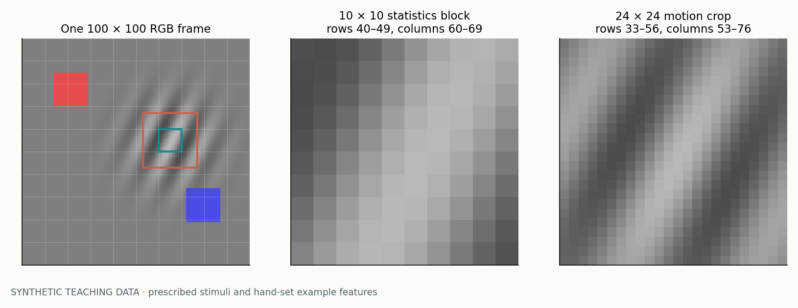
For grid row r and column c, the statistics block begins at image row 10r and column 10c. Its center lies at coordinates (10c + 4.5, 10r + 4.5), where x is horizontal and y vertical. The motion crop begins seven pixels earlier on each axis and extends 24 pixels. At image borders, missing centered-image pixels are padded with zero, corresponding to neutral gray before centering. Padding supplies the assumed values beyond the image boundary.
Step 3 · Appearance from one frame
Suppose we want a number that responds to a dark-to-light transition from left to right. A small matrix can subtract pixels on the left and add pixels on the right. Sliding that matrix over an image gives a spatial map of this particular contrast pattern. A convolutional layer learns many such local weighted sums. Training shapes each channel's selectivity; inspecting its responses reveals the patterns it encodes.
Read the arithmetic: K is a hand-set teaching filter, B a 3 × 3 teaching patch, and r,c index their rows and columns. Multiply corresponding entries and sum them. The three bright pixels meet positive weights of 1/3, producing 1 in total. Reversing the patch produces a negative response. A uniform patch produces zero because the weights sum to zero.
For RGB input, a learned filter has separate weights for red, green, and blue. It sums contributions from all three channels to form one output channel. Another filter forms another output channel. Our first layer learns 16 output channels from 5 × 5 RGB neighborhoods. Its stride is two, meaning its sampling position moves two input pixels between neighboring outputs. Padding preserves the stated 50 × 50 output size. A second 3 × 3 layer, also with stride two, maps 16 channels to 32 at 25 × 25 sites.
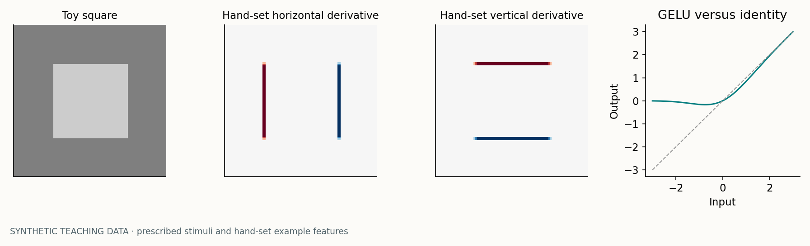
Why insert a nonlinearity? Without one, successive linear layers can be composed into another linear transformation. A nonlinear response allows later layers to combine features in ways that depend on their activation levels. The model uses GELU, defined as z times the standard-normal cumulative probability at z. z is one scalar preactivation, meaning the weighted sum before the nonlinearity. GELU(0)=0, GELU(1)≈0.841, and GELU(−1)≈−0.159. Negative input is smoothly attenuated.
Local feature selectivity and spatial organization motivate comparison with early visual cortex. Supervised task losses optimize the filters, whose weights are shared across image locations. The neuroscience connection concerns local, reusable feature measurements. [57]
Step 4 · Put appearance on the common grid
After the second convolution, the appearance pathway has 32 maps, each 25 × 25. The other pathways will describe 100 sites on a 10 × 10 grid. Adaptive average pooling puts appearance onto that grid by averaging small neighborhoods of each feature map. Each feature channel is pooled independently. At the end, each site still has 32 appearance numbers.
j indexes one output coordinate along an axis. The bin starts at input feature index s and stops before index e. Floor rounds down and ceiling rounds up. For output index 0, average indices 0,1,2. For index 1, average 2,3,4. The shared index 2 shows that neighboring adaptive-pooling bins can overlap. Apply the same rule along both axes, then average the selected rectangle independently for each channel.
This matters when interpreting projected attention. A spatial token is assigned to a grid site, but the CNN information at that site depends on more than a nonoverlapping 10 × 10 pixel tile. Before pooling, a second-layer unit has a 9 × 9 input receptive field: the first layer covers five pixels, and three second-layer taps span three first-layer positions separated by two pixels. The extent is therefore 5 + 2×2 = 9. Pooling over three adjacent second-layer positions, whose centers are four input pixels apart, increases that extent to 9 + 2×4 = 17 pixels along the axis.
The 17-pixel extent describes potential input support for this specific architecture, including padding effects at borders. The 10 × 10 attention projection visualizes selection over these spatially indexed representations.
A local pattern can still produce a large orientation-sensitive or color-sensitive feature value. Fine changes in where that pattern lies within the pooled neighborhood may become less distinguishable. Pooling trades spatial precision for a smaller representation.
Step 5 · Keep simple quantities explicitly
The CNN learns task-useful combinations of local pixel values. A filter that emphasizes edges might discard a uniform color shift. Normalization can change intensity scale. The architecture therefore also supplies four direct statistics for each 10 × 10 image block: three centered RGB means and a grayscale intensity-energy measure. These are available to learning alongside the 32 appearance channels.
Subtracting 0.5 centers the input around neutral gray. An all-red-channel value of 0.7 then becomes +0.2; a value of 0.3 becomes −0.2. This is a fixed coordinate change. Mean color remains available precisely because the centering reference is fixed across inputs.
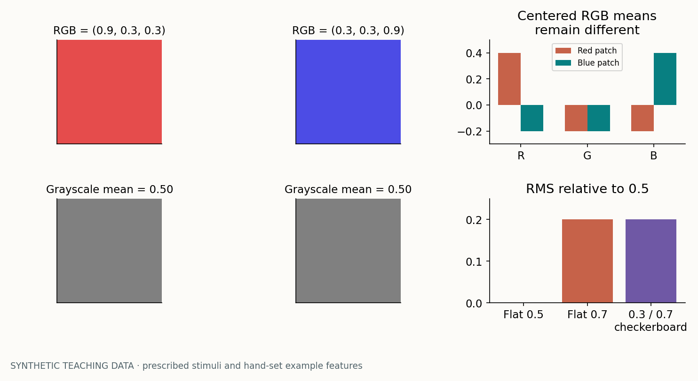
Here Igray is the arithmetic RGB-average image inside one block, e is its mean squared deviation from 0.5, and Var is the population variance over that block's 100 pixels. The identity follows by adding and subtracting the block mean, expanding the square, and observing that deviations from the mean sum to zero. The feature supplied to the network is √e, the root-mean-square deviation. It responds both to within-block variation and to a uniform offset from neutral gray.
A flat 0.7 block has zero variance but √e=0.2. A checkerboard split equally between 0.3 and 0.7 also has √e=0.2, but now the contribution comes from variance. Their color means and CNN features distinguish the blocks. Retaining several feature groups lets one description resolve another's ambiguity.
Conversely, arithmetic grayscale deliberately loses color distinctions. The RGB triples (0.9,0.3,0.3) and (0.3,0.3,0.9) both average to 0.5. The two patches produce identical grayscale correspondence inputs. The RGB appearance pathway preserves this color distinction.
Step 6 · Prepare a local matching problem
Correspondence asks whether structure in an earlier image reappears at a shifted position in a later image. Before asking that question, the model extracts a 24 × 24 grayscale crop at each site. The crop is larger than the 10 × 10 statistics block so that structure can move locally while remaining in view. Adjacent sites receive overlapping evidence. This is a fixed design choice about spatial scale.
First, subtract the crop's own mean. This differs from the fixed 0.5 centering used for RGB appearance and raw statistics. Subtracting the crop mean removes a spatially uniform offset from the matching calculation. Removing the constant component makes correlation respond to spatial structure.
Second, multiply the centered crop by a Hann window. In each axis its weights rise smoothly from zero at one edge to nearly one near the center and return to zero at the other edge. The two-dimensional weight is the product of the horizontal and vertical weights. Pixels near the crop center influence matching more than pixels near the boundary.
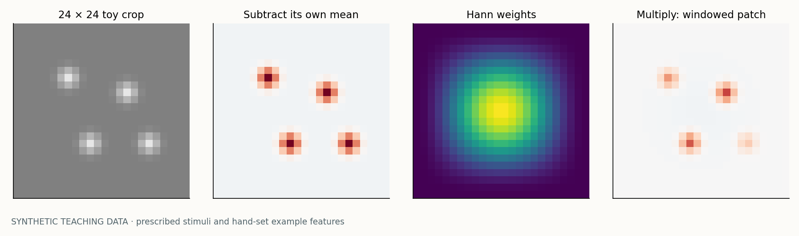
A sharp rectangular crop introduces its own boundary edge into the measured image. Tapering helps reduce that artifact. Tapering reduces contributions from the crop's edge. As a pattern moves through the fixed window, its features receive different weights. This reweighting can shift the correlation peak or mean relative to the prescribed displacement.
Step 7 · Ask about candidate movements
Take two prepared crops. For each candidate movement, shift their alignment and sum products of overlapping values. If bright and dark structure line up consistently, the sum is relatively large. If structure is misaligned, positive and negative contributions can cancel. The model asks this question for horizontal and vertical shifts from −4 to +4 pixels, giving nine choices per axis and 81 combinations.
A is the prepared earlier crop, B the prepared later crop, and bold x a two-dimensional pixel position. Bold d is a proposed displacement: dx is horizontal and dy vertical. The sum runs over the padded crop grid using the implementation's indexing convention. R is an unnormalized correlation score. If a bright feature moves from earlier x=8 to later x=10, evaluating dx=+2 aligns those features in this expression. Positive vertical displacement follows increasing image row, downward in the displayed image.
Let an earlier one-dimensional pattern be [0,1,0,0] and a later pattern [0,0,1,0], temporarily ignoring mean subtraction and windowing. At shift zero, the nonzero entries occupy different positions, giving a product sum of zero. At shift +1, it is one. This isolates the correspondence operation. The real model applies it to signed, mean-centered, windowed two-dimensional crops, so its scores are richer than this binary example.
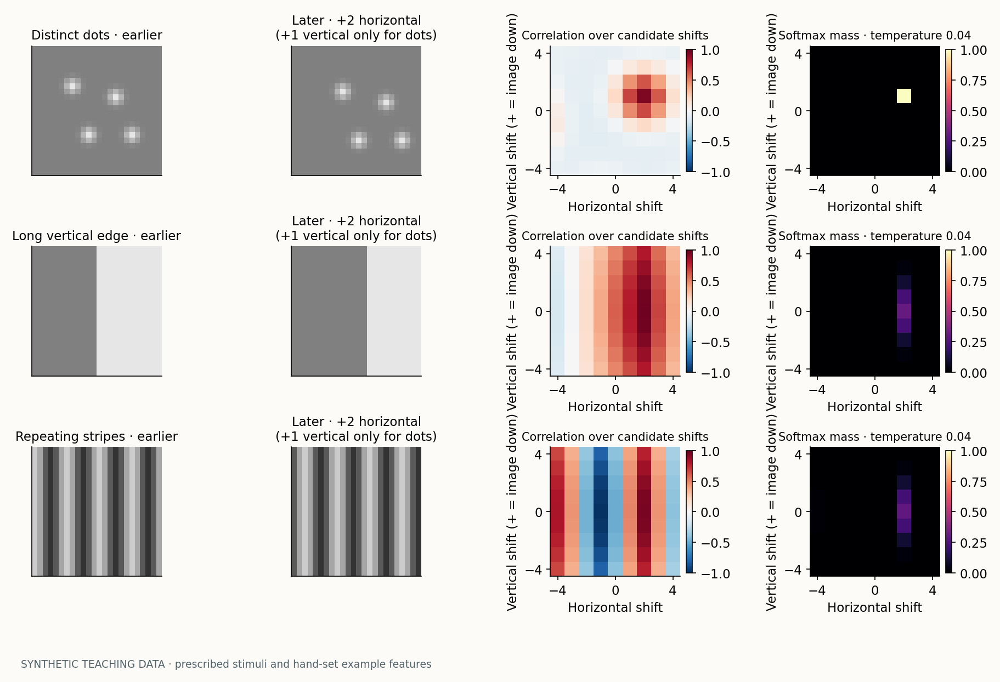
The energy-normalized score divides R by the square root of the product of the two crop energies, where each energy is the sum of squared prepared pixels. If both crops are scaled by a positive factor a, their product sum scales by a² and the denominator also scales by a². Away from the small numerical floor, their ratio stays unchanged. This reduces sensitivity to multiplicative intensity scale. A separate energy feature records the signal strength.
Repeating textures can produce several alignments. Independent dot replacement can destroy correspondence. Motion larger than the search radius can be outside the candidate set. The fixed bank scores each candidate directly from the observed pixel arrays.
Step 8 · Same question, faster arithmetic
One could explicitly shift the two images 81 ways and recompute every product sum. The implementation instead computes many correlations through Fourier transforms. A Fourier transform describes an image using spatial-frequency components: patterns that vary slowly or rapidly across space, each with an amplitude and phase. Phase specifies alignment of the component. Translating a pattern changes those phases in a structured way.
The algorithm zero-pads each prepared 24 × 24 crop to 32 × 32, transforms both crops, multiplies the later transform by the complex conjugate of the earlier transform, and applies the inverse transform. It then reads the entries for the 81 retained shifts. Complex conjugation changes the sign of the imaginary part; its order matters because reversing the image order reverses the displacement convention.
Here F denotes the discrete Fourier transform, F−1 its inverse, and the bar complex conjugation. A, B, x, and d are the same earlier crop, later crop, pixel location, and candidate shift as above. On the padded finite grid, the sums use circular indexing. Multiplication in frequency coordinates produces correlation in displacement coordinates. No part of this identity supplies additional evidence; the two sides compute the same quantity.
Why padding? Circular indexing would otherwise let the right edge wrap around to the left, creating false overlap. A complete linear correlation of two 24-pixel signals would need 47 positions along each axis. The eight-pixel zero margin of the 32-pixel grid is sufficient to keep the retained small shifts, −4 through +4, clear of this wraparound contamination. Negative shifts are addressed by modular array indices; for example, −1 uses index 31 of a length-32 axis.
The simulations independently calculate retained correlation both by direct product sums and by this Fourier route. They agree to numerical precision. They also compare the resulting scores against the repository's fixed CPU motion-bank implementation. That check verifies the teaching computation against the implementation.
Step 9 · Keep the alternatives
At each spatial site and time lag, the correlation bank produces 81 scores. Each score describes a candidate displacement at the current image site. A small learned network adjusts the score pattern on its 9 × 9 displacement grid. It has a 3 × 3 convolution from one to four channels, GELU, and a 3 × 3 convolution back to one channel: 77 learned parameters in total. Those same parameters are reused at every spatial site, time, and lag. This convolution combines neighboring displacement hypotheses within each image site's matching grid.
C is the vector of fixed correlation scores. The index k selects one displacement. The function f with parameters θ is the learned refinement; its final layer starts at zero, so the initial refined score C̃ equals C. The number 0.1 scales the refinement. The temperature τ is positive and controls how strongly score differences affect the resulting weights p. Each lag has its own learned temperature, initialized to 0.04 and constrained to the interval 0.015–0.2. The denominator includes all candidates, making their weights sum to one.
“Population” means retaining the whole pattern of responses. It can have one peak, two peaks, a ridge, or nearly uniform weights. Converting it immediately into one winning direction would discard the alternatives. Converting it into an average displacement discards different information: equal weight on leftward and rightward motion has average zero, just as a single stationary hypothesis does. Our encoder retains the population and supplies its average as a separate feature.
Consider just two hypotheses with scores 0.80 and 0.76. Their odds ratio is exp((0.80−0.76)/τ). At τ=0.04 it is exp(1), about 2.72:1, giving 73.1% versus 26.9% if these are the only two alternatives. At τ=0.20 the odds are about 1.22:1, or 55.0% versus 45.0%. The real bank has 81 alternatives; other candidates change the individual probabilities, although this pairwise odds ratio remains exact.
This deliberately reduced example contains only two candidates, −3 and +3 horizontal pixels. It uses the same softmax rule on this reduced candidate set.
The derivative explains the training tradeoff. For candidate indices i and j, ∂pi/∂C̃j = pi(δij−pj)/τ, where δij equals one when the indices match and zero otherwise. Smaller temperature increases sensitivity near a competition between candidates. Once one candidate has almost all the mass, factors such as p(1−p) become small and gradients can saturate. Temperature governs both weight concentration and gradient sensitivity.
The neuroscience connection. A population account asks what the joint response of differently tuned units represents. Simoncelli and Heeger's model links local motion computation to distributed responses of V1 and MT stages. Our displacement bank adopts the representational idea of preserving alternatives, but uses a different pixel-matching algorithm. [22] Probabilistic population-code theory goes further: under specified neural-response statistics, a population can encode uncertainty and support inference. They are normalized matching weights, and we should call them that. [25]
Step 10 · Signal strength and ambiguity
The normalized correlation removes much of the dependence on contrast amplitude. That is useful when matching a bright pattern to a dimmer one, but it creates a second need: indicate whether there was appreciable signal in either crop. A tiny pattern could have a clean normalized correlation even though it would be fragile to added noise. The implementation therefore carries an additional scalar based on the energies of the prepared crops.
EA and EB are nonnegative sums of squared, mean-centered, windowed pixel values. Their geometric mean n is large only when both crops have energy. The reliability r lies between zero and one; the constant 0.01 sets its scale. At n=0.01, r=0.5; at n=0.09, r=0.9. This heuristic measures the strength of the prepared image signals.
If both prepared crops are identically zero, every correlation score is zero. Before any learned refinement, softmax then gives 1/81 to every candidate, while r is zero. The supplied population feature is multiplied by r and therefore vanishes. Color means, learned appearance features, and differences from an existing trace remain available. For example, a blank replacing an object is an event in the input even when it has no local motion texture.
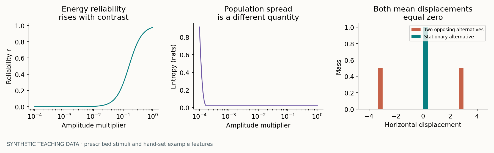
An energetic repeating stripe pattern can have high r and several plausible matches. This is ambiguity in a strong signal. In the figure we describe ambiguity with entropy H=−Σkpklog pk, where the sum includes all 81 candidates and logarithms are natural. Entropy is zero for one certain candidate and log(81)≈4.394 for a uniform population. Entropy is a teaching statistic in this plot; the encoder uses the energy-based reliability r. The plot separates population ambiguity from the signal strength measured by r.
If the two crops are both scaled by a, n scales by a². Their normalized correlation can stay almost unchanged while r changes substantially. This is why it is coherent to retain both correlation shape and signal strength. An irrelevant distractor may have excellent correspondence and a strong signal. Relevance requires cue use, selection, and memory.
Step 11 · Look across several intervals
The bank repeats the same computation for nominal lags of one, two, and four frame steps. A longer interval can make slow motion easier to distinguish from zero displacement. A shorter interval can keep fast motion within the finite search range. These are complementary temporal observations of the same movie.
The superscript ℓ identifies the chosen lag. The indices t and i identify current time and image site. The vector dk is the candidate horizontal and vertical displacement in image pixels. A hat marks an estimate. The first expression is a weighted mean displacement; the second expresses that estimate in pixels per frame step by dividing by the nominal lag.
| True steady velocity in a teaching example | Lag 1 displacement | Lag 2 displacement | Lag 4 displacement |
|---|---|---|---|
| 0.5 pixels right per step | 0.5 pixels | 1 pixel | 2 pixels |
| 2 pixels right per step | 2 pixels | 4 pixels | 8 pixels: outside the ±4 candidate range |
The table gives the physical displacements in this prescribed-motion example. Candidate shifts are integer-valued, so a noninteger expectation comes from distributing mass over candidates; the expectation can therefore fall between integer candidates. Along each axis the candidate range corresponds to velocities of at most 4/ℓ pixels per step. Long-lag estimates can be misleading for fast motion even when the short-lag estimate is useful.
Startup deserves explicit attention. The earlier-frame index is max(0,t−ℓ). At t=0 every lag compares frame zero with itself. At t=1 the lag-four computation compares frames zero and one but still divides its displacement by four. At t=2 it compares zero and two and still divides by four. Only from t=4 onward does this lag span four actual frame steps. These startup estimates enter the computation with the nominal lag divisor. This is an approximation, particularly relevant to short trials.
The six velocity coordinates—horizontal and vertical for each lag—enter the fusion vector without multiplication by r. For prediction, the implementation averages the three lag-specific velocities equally. These choices determine how the population is summarized for image prediction.
Step 12 · Ask what should appear next
A motion estimate makes a concrete prediction: if the local pattern continues moving this way, where should its pixels appear on the next observation? At time t, the model uses the flow already estimated at t−1 to move the previous grayscale image forward. It compares that prediction with the image that actually arrives. Using the previous flow matters: estimating motion from the new image and then claiming to have predicted that same image would answer a different question.
I denotes the grayscale image and Î the predicted image. Bold x is the output pixel position. The bar over v denotes the equal average of the three velocity estimates, after which the coarse spatial field is interpolated to image resolution. The minus sign implements backward sampling: to predict the value at destination x when motion is rightward, look leftward in the previous image for the pixel that would arrive there.
The 10 × 10 flow field is bilinearly enlarged to 100 × 100. Flow values retain their image-pixel units during enlargement. Sampling the old image also uses bilinear interpolation. If the source coordinate falls outside the image, border padding repeats the nearest boundary value. Newly revealed surfaces and novel images contribute residuals wherever they differ from the transported image.
Suppose the source falls one quarter of the way from left to right and halfway from top to bottom between four pixel values: top-left 0.2, top-right 0.4, bottom-left 0.6, bottom-right 0.8. Bilinear weights are 0.375, 0.125, 0.375, and 0.125, respectively. Their weighted sum is 0.45. Those weights add to one and vary continuously as the sampling coordinate moves. This continuity lets gradients through the prediction error adjust the learned motion refinement.
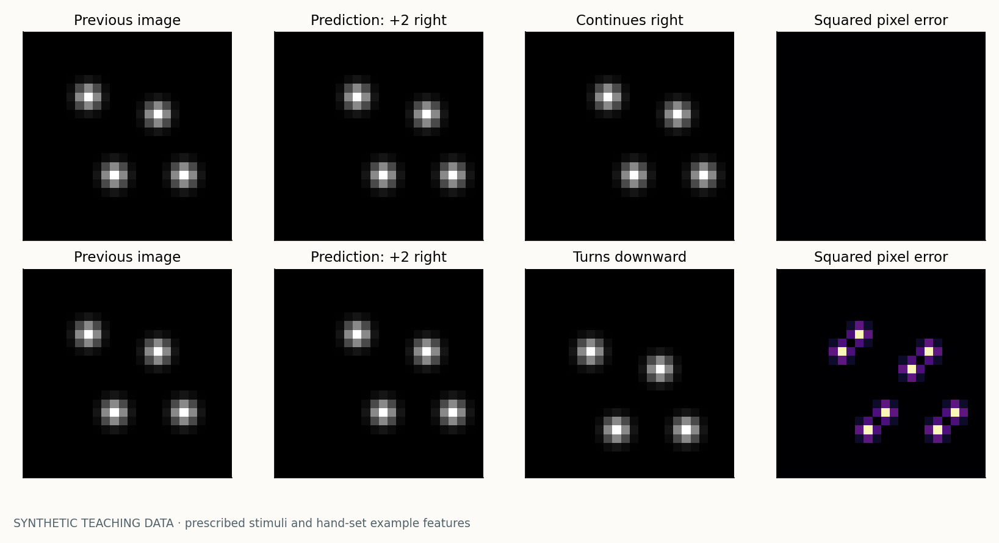
For each nonoverlapping 10 × 10 image block, the model averages the squared prediction residual. It then divides by the average of the current and previous block energies, where these energies are means of (gray−0.5)², floored at 10−4. This gives a relative error feature: a residual is judged against the block's signal scale. These block energies differ from the prepared-crop energies used in r. They use a different neighborhood, centering rule, and averaging convention.
Bi denotes the set of 100 image pixels in block i; u denotes its fixed-background energy; e is the normalized error. “Mean” divides a sum by the number of included pixels. At the first frame, the error feature is set to zero because there is no previous frame. The normalized error enters fusion directly.
The auxiliary training loss additionally weights errors by ω=√(ut−1,iut,i)/(√(ut−1,iut,i)+10−4) and averages over observations and sites. Here ω weights pixel-prediction errors, while r weights correspondence populations. The task loss is supplemented by 0.05 times this prediction loss. Pixel observations supply the prediction targets, and task labels supervise the final decisions.
A high error can mean changed motion, a new photograph, dot replacement, poor motion estimation, or a boundary artifact. The model must learn how to interpret it in context. The conceptual connection to predictive processing is the comparison of an anticipated input with an observed input. Our image-transport objective applies the prediction-and-mismatch principle discussed in the cortical predictive-coding account of Rao and Ballard. [58]
Step 13 · Build a local expectation
Prediction error compares images. A second feature compares the current motion population with its own recent history. Every location and lag has an 81-entry trace, initialized uniformly to 1/81. Before updating it, the model sums the absolute differences between the current population and the old trace. That scalar is large when the current distribution differs from the recent reference.
For clarity this equation follows one site and one lag, omitting their indices. The vector Z is the local trace, p is the current population, δ is its pre-update difference, and r is the energy reliability just defined. The learned base write rate ρ is a sigmoid of a scalar parameter, initialized to 0.1. It is shared across sites and lags. The effective write fraction is ρr. Multiplication in this equation scales every entry of the population vector.
The order matters. Comparing before writing asks whether the new observation disagrees with the old reference. Writing first would partially absorb the change before measuring it. Because the write fraction lies between zero and one, this update is a convex combination: nonnegative normalized populations remain nonnegative and normalized. When r is zero, the trace is held; when r is one, its update uses the full base rate.
For a constant population p and constant effective rate h=ρr, repeated updates give Zn−p=(1−h)n(Z0−p). Here n counts updates after the starting trace Z0. The remaining mismatch is multiplied by 1−h every time. Its half-life is log(0.5)/log(1−h). With ρ=0.1 and r=1, that is about 6.58 updates. With the same base rate and r=0.2, it is about 34.31 updates. The half-life is expressed in recurrent update counts.
The prescribed population selects rightward motion for observations 0–15 and downward motion from 16 onward. It starts with a uniform trace. The controls set the update rate in this synthetic demonstration.
Startup produces a mismatch even without a physical change. Comparing a one-candidate population with an initial uniform trace gives |1−1/81|+80|0−1/81|=160/81≈1.975. This nearly reaches the maximum possible distance of two. The value δ measures evidence relative to the initialized and adapted reference. Training must learn how such evidence relates to the required response.
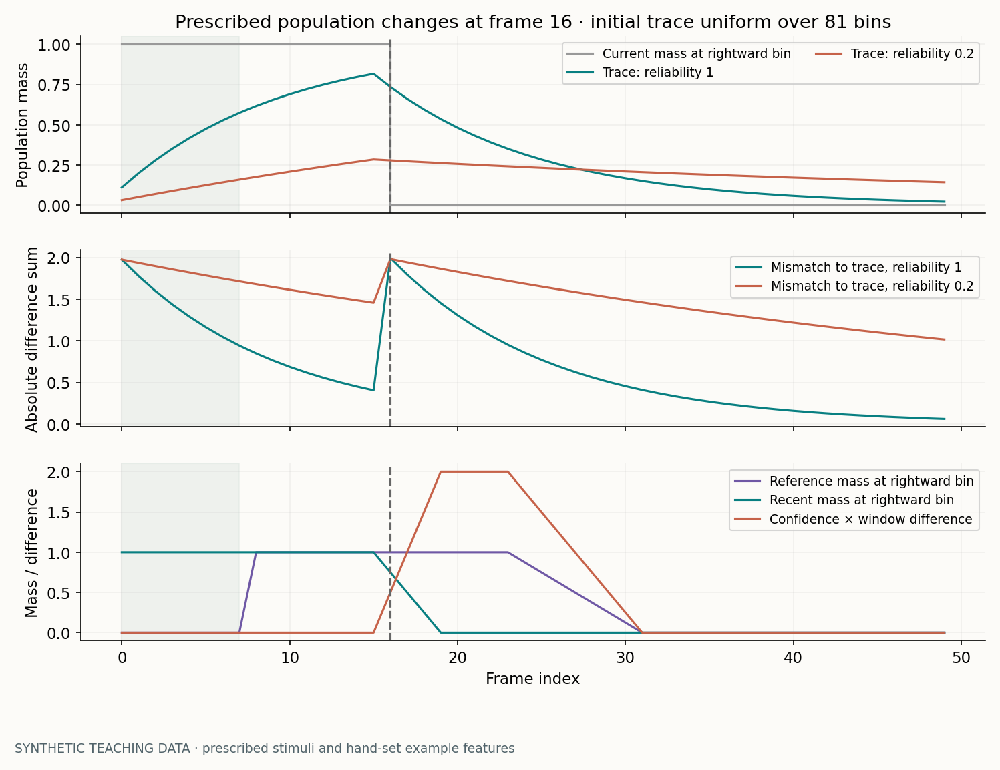
This local trace is distinct from the spatial GRU, the CLS recurrent state, and the final attention-selected comparison trace. They remember different objects and follow different update rules. Z remembers a distribution of local displacement matches; the GRUs store learned features. Calling all of these simply “memory” hides distinctions needed to understand both behavior and stability.
Step 14 · Compare before selecting
An adaptive trace continuously moves toward the newest input. The model also constructs a more explicit comparison: an older eight-observation window and a recent four-observation window, separated by four observations. At current index t, the older reference includes t−15 through t−8; the gap includes t−7 through t−4; and the recent observation includes t−3 through t. Each endpoint is inclusive.
At t=24, that means reference frames 9–16, gap frames 17–20, and recent frames 21–24. These windows slide on every observation. The choice of 8/4/4 is an engineered temporal bias: it makes certain before-and-after comparisons directly accessible, but it also limits the timescales and sequence lengths on which this branch can operate.
Within each window, population observations are weighted by their energy reliability. For available times s in a window W, the mean is p̄W=(Σs∈Wrsps)/max(Σs∈Wrs,10−6). The bar denotes a temporal weighted average, and W denotes its set of observation times. The small floor prevents division by zero. A completely absent or zero-reliability window has a zero vector.
In a reduced two-category example, populations [1,0] and [0,1] with reliabilities 1 and 0.1 have mean [1/1.1,0.1/1.1]≈[0.909,0.091]. Their unweighted mean would be [0.5,0.5]. Separately, if these are the only observations available in the eight-step reference, its confidence is 1.1/8=0.1375. Normalizing the population tells us its relative composition; dividing reliability by the full nominal window length preserves evidence that most of the expected history is missing.
The two confidence values are qR=(Σr)/8 and qO=(Σr)/4 for the reference and recent windows respectively. Their joint weight is q=√(qRqO). Both windows must contribute for this to be nonzero. In a seven-frame VDA trial, indices run from zero to six, and the older reference never exists. The entire 735-number explicit window-comparison vector is therefore zero throughout those trials. The code-level simulation checks this directly. Any successful behavior on those VDA trials must use the other feature and recurrent pathways.
For each lag and site, the comparison retains the 81 reference entries, the 81 recent entries, and their 81 entrywise absolute differences, all multiplied by 10q. It adds two scalars: the sum of absolute differences times q, and one minus cosine similarity times q. Cosine similarity measures alignment by dividing a vector dot product by the product of vector lengths, with numerical safeguards. The result contains 3×81+2=245 numbers per lag, or 735 across all three lags. Keeping the reference and recent vectors preserves direction-of-change information that the absolute difference alone would lose.
The factor ten rescales the population coordinates supplied to subsequent layers. Scaling sets the numerical balance of the downstream inputs. The comparison vector remains separate from the 292-to-64 fusion described next, then uses the same spatial attention weights when being selected into a 735-entry decaying memory.
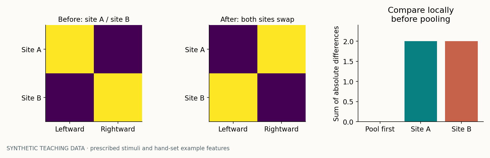
The spatial ordering matters because the task asks about a relevant location. Comparing each site before pooling makes it possible to select the appropriate comparison afterward. Likewise, a persistent changed motion eventually enters both windows, making their difference shrink. The comparison detects a temporal discrepancy; later recurrent state must retain it if the response is requested after that discrepancy has passed.
Step 15 · Assemble the sensory description
We can now account for every input coordinate to fusion. At each of 100 sites, the encoder concatenates seven kinds of information. Concatenation places all the values next to each other in one vector. The dimensions below describe one site at one observation.
| Coordinates | Count | Question the values can help answer |
|---|---|---|
| Learned appearance responses | 32 | What spatial/color patterns are here? |
| Centered RGB means and fixed-background grayscale RMS | 4 | What is the local color and intensity scale? |
| Three displacement populations, each scaled by 10r | 243 | Which local displacements match, with what signal strength? |
| Three energy reliabilities | 3 | How much prepared crop signal supports each lag? |
| Three pre-update distances from local traces | 3 | How different is this population from recent history? |
| Three horizontal/vertical velocity estimates | 6 | What are the mean displacements per nominal frame step? |
| Normalized pixel-prediction error | 1 | How poorly did the previous motion predict this image? |
| Total | 292 | One local sensory description before learned fusion |
Here f is the concatenated 292-number feature vector, V the resulting visual token, t time, i spatial site, k input-feature index, and j output-feature index. Wfusion is a learned 64 × 292 matrix shared across sites and times. The superscript names the layer's role. The 64-entry bias bfusion is also shared. The learned positional vector epos supplies 64 values for site i, so the model can distinguish otherwise similar evidence at different grid positions.
Temporarily shrink the input to three features f=[0.2,0.7,0.1]. One learned row of weights [2,−1,0.5] and bias 0.1 gives 2×0.2−0.7+0.5×0.1+0.1=−0.15, before position is added. Another row can respond to a different combination. The real layer does exactly this kind of weighted sum 64 times using 292 inputs. A fused channel can combine color and motion evidence.
This layer has 64×292+64=18,752 parameters. The positional table has 100×64=6,400 more. These parameter counts stay constant across trial lengths because every frame uses the same weights. Positional embeddings identify the site. Training teaches the relationship between a visible cue and the relevant site.
Compression is real. A 64 × 292 matrix has rank at most 64, so at least 228 independent directions in the unrestricted input space are lost by the linear map. For a fixed site, two feature vectors that differ only in its null space produce the same token. Actual sensory features occupy a structured subset of that space, but there is still no general guarantee that every distinction survives. Task training shapes the compressed representation around distinctions useful for the tested judgments.
The separate 735-number comparison vector avoids this particular compression. The same spatial attention weights select it before it enters its decaying memory. The terminal classifier later receives 64 CLS-state values plus 735 comparison-memory values, giving 799 inputs to a shared 64-unit readout. The next chapter derives those attention and memory computations.
Step 16 · Return to the scientific question
The architecture offers several descriptions because different tasks require different evidence. The appearance CNN can describe spatial structure from a single image. Color means preserve information that grayscale motion matching discards. Correspondence populations describe temporal image relationships. Local traces and recurrent memories carry information across observations. Their usefulness depends on stimulus timing, task rules, and what training has actually taught the observer to retain.
| Input situation | What the front end supplies | What still has to be learned or tested |
|---|---|---|
| Static orientation or color judgment | Appearance patterns, color statistics, site information | Relevant distinctions must survive pooling and fusion and be selected for the requested response. |
| Motion direction changes at one of two sites | Displacement populations, temporal differences, prediction residuals | The cue determines which site's change counts toward the positive response. |
| A sequence of unrelated photographs | New appearance patterns on each observation; potentially poor cross-image correspondence | Memory must preserve image identity despite transitions. Recognition requires comparing the probe with retained image information. |
| Seven-frame VDA | Appearance, short-lag correspondence, local trace differences, recurrent state | The older-window branch is zero; the recurrent CLS/value route carries the decision. |
| A blank retention interval | The blank's visible statistics and the existing recurrent state | Recurrent state must retain the useful representation through the blank interval. |
Consider a short dot sequence. On the first observation, the encoder sees texture and self-correspondence; its population trace is still uniform and its prediction error is zero. On the next observation, short-lag matching can describe the displacement. If a later observation moves unexpectedly, its population and prediction residual may differ from the recent reference. The subsequent selection and decision machinery combines this sensory evidence with the cue to determine whether the target changed.
For photographs, crop energy and cross-image correspondence describe different aspects of the input. The scalar r describes the prepared crops' signal energy. A model may learn to rely on appearance and memory for recognition while treating motion features differently. We should verify that claim with interventions or carefully designed probes before presenting it as an established mechanism of a particular trained checkpoint.
What is biologically motivated here? Local receptive fields motivate describing spatial structure through local responses. Population representations motivate retaining competing motion evidence. Prediction and temporal references motivate comparing current evidence with expectations based on the past. The common spatial selector expresses our hypothesis that a downstream priority mechanism can act across kinds of sensory content. The neuroscience chapter develops the experimental evidence and its connections to the model in depth.
A useful way to read the next chapter is to keep three objects separate: the current visual token V, the local explicit comparison vector, and the previous recurrent state. Attention uses current tokens and previous state to allocate priority. It then selects evidence and modulates memory writing. That gives a concrete place to test whether one spatial intervention affects both motion and static information without assuming that the two sensory pathways are identical.
The nine figures illustrate specified operations using reproducible synthetic inputs. The numerical checks compare direct correlation with FFT correlation, verify agreement with the repository's fixed CPU motion-bank and warp functions, and confirm that the explicit comparison branch is zero for seven-frame inputs. The separate measured-results chapter reports the trained observer's performance and interventions.
Download all simulation data · Read the numerical verification receipt. Click any figure to enlarge it. Each figure also has vector SVG and PDF exports. Continue to attention → memory → choice, or open the compact implementation reference below to check the full equations together.
A subscript usually indexes time, location, or channel; a superscript such as “gray,” “pos,” or “selected” labels a kind of quantity and names that quantity's role. A hat denotes an estimate or prediction, a tilde denotes a transformed value, and a bar denotes a local average or explicitly defined effective quantity. Square brackets with a semicolon concatenate vectors. The symbol \(\odot\) means multiply corresponding entries. The symbol \(*\) denotes convolution, \(\|x\|_2\) is Euclidean vector length, and \(x^\mathsf T y\) is a dot product. Learned matrices are named \(W\), convolution kernels \(K\), and biases \(b\), with labels identifying their layers. The same letter in a different tutorial is defined locally; grayscale never uses the ambiguous letter G.
For each equation below, the adjacent explanation names its inputs, output, and operation. Numbers such as 64 and 100 are dimensions, while small constants such as \(10^{-8}\) prevent division by zero. Each symbol is defined alongside its equation.
Let \(X_t\in[0,1]^{3\times100\times100}\) be frame \(t\), with \(t=0,\ldots,T-1\). Let \(i\in\{1,\ldots,N\}\), \(N=100\), index a 10 × 10 spatial grid. Learned feature width is \(D=64\). We omit the batch index unless it is important. The recurrent states are a spatial field \(H_t\in\mathbb R^{64\times10\times10}\), a global CLS vector \(c_t\in\mathbb R^{64}\), a local motion-population trace \(Z_t\), and an attention-selected comparison trace \(m_t\in\mathbb R^{735}\). Spatial and CLS states and \(m\) start at zero on every trial; the local population trace starts uniform over displacements.
“CLS” is a convenient name for a recurrent summary vector. One CLS query produces a distribution over 100 spatial locations. The model has no task-conditioned query, task-specific sensory encoder, or task identity embedded in its input tokens. Task identity selects the output layer only. Fixed sensory windows require recent history; the implementation computes their causal equivalents from the supplied movie tensor before the recurrent loop, with no use of later frames in earlier-time features.
A convolution is a weighted sum over a local neighborhood. For output channel \(o\), input channel \(k\), output row and column \(r,c\), kernel row and column \(u,v\), stride \(s\), and padding \(p\), the library operation is \(Y_{o,r,c}=b_o+\sum_{k,u,v}K_{o,k,u,v}X_{k,sr+u-p,sc+v-p}\). Here \(Y\) is the output image of features, \(X\) is the input, \(K\) contains learned kernel weights, and \(b_o\) is the learned bias of output channel \(o\), with out-of-image entries zero. The same weights are used at every location. The library computes cross-correlation, applying the kernel in its stored orientation. Local selectivity and organized receptive fields provide a biological motivation, while exact weight sharing and backpropagation remain engineering assumptions. [57]
Center the RGB input by subtracting 0.5. A convolutional pathway applies a 5 × 5 convolution with stride 2 (3 → 16 channels), GELU, a 3 × 3 convolution with stride 2 (16 → 32), GELU, and adaptive average pooling to 10 × 10:
The intermediate grids are 50 × 50 and 25 × 25. Adaptive pooling maps the latter to the common 10 × 10 grid, with overlapping input receptive fields. Each output site can depend on overlapping input neighborhoods. Convolution supplies spatially shared feature detectors, while the learned filters determine which appearance properties are useful. Retinotopically organized feature processing motivates this spatial layout.
For input size 25 and output size 10, adaptive pooling averages indices from \(\lfloor25i/10\rfloor\) up to, but excluding, \(\lceil25(i+1)/10\rceil\) along each axis. Adjacent bins can overlap. GELU applies \(\operatorname{GELU}(x)=x\Phi(x)\), where \(\Phi(x)=\frac12[1+\operatorname{erf}(x/\sqrt2)]\) is the standard-normal cumulative distribution. It smoothly attenuates negative values. Later, sigmoid \(\sigma(x)=1/(1+e^{-x})\) produces fractions between zero and one, and \(\tanh(x)=(e^x-e^{-x})/(e^x+e^{-x})\) produces bounded signed candidate states. These nonlinearities let the response depend on combinations of feature activation levels.
At each nonoverlapping 10 × 10 input block \(\Omega_i\), compute three centered channel means and a grayscale energy. Here grayscale is the arithmetic RGB mean \(I_t^{\rm gray}(x,y)=[X_{t,R}(x,y)+X_{t,G}(x,y)+X_{t,B}(x,y)]/3\). Here \(X_{t,R}\), \(X_{t,G}\), and \(X_{t,B}\) are the red, green, and blue pixel channels of the same frame; the capital letters after the comma name channels. The symbol \(I_t^{\rm gray}\) denotes the arithmetic average of the RGB channels:
The fourth number is RMS deviation from the fixed gray level. This distinction matters for a uniformly bright patch. RGB information survives both through these means and through the CNN even when the grayscale correspondence pathway discards chromatic distinctions. [36]
Extract 24 × 24 grayscale neighborhoods at stride 10 after padding the centered image by seven zero-valued pixels on each side. These larger neighborhoods overlap while their centers align with the spatial grid. Subtract each patch's mean, then multiply by a separable, nonperiodic Hann window:
The window reduces the influence of hard patch boundaries. The implementation fixes this receptive-field width at 24 pixels. For each nominal lag \(\ell\in\{1,2,4\}\), compare with frame \(t_\ell=\max(0,t-\ell)\). At startup, the earlier index repeats frame zero: there is no special mask suppressing these shortened-history comparisons.
Zero padding to 32 × 32 permits efficient correlation. Only shifts in \(\{-4,\ldots,4\}^2\) are retained, using modular FFT indices for negative offsets. The bank retains the central ±4-pixel shifts needed for its candidate set. The retained small-shift region fits inside the zero-padding margin. With the chosen conjugation order, a rightward displacement of shared structure favors positive \(d_x\).
For a zero-padded patch, the discrete transform is \(F(u,v)=\sum_{x,y=0}^{31}P(x,y)e^{-2\pi\mathrm{i}(ux+vy)/32}\). The inverse uses the opposite sign and divides by \(32^2\). A translation becomes a frequency-dependent phase rotation. Multiplying the later transform by the complex conjugate of the earlier one compares these phases; the inverse transform collects their agreement at each shift. Equivalently, expanding the sums and using orthogonality of the complex exponentials gives \(R(d_x,d_y)=\sum_{x,y}A(x,y)B(x+d_x,y+d_y)\), with circular indices on the padded grid. The zero margin prevents wraparound contamination for the retained small shifts. FFT evaluates this fixed transform efficiently.
The reliability \(r\) is an energy-based attenuation factor. It measures prepared-image energy and can be large for strongly textured, ambiguous patterns. Longer lags make small per-frame motion easier to separate spatially but also increase sensitivity to dot replacement and displacements leaving the search range. Nominal velocity ranges shrink with lag: ±4, ±2, and ±1 pixels per frame per axis.
Reshape each 81-value correlation vector into its 9 × 9 displacement lattice. A shared two-layer convolutional refinement operates over the 9 × 9 displacement grid: 1 → 4 channels with a padded 3 × 3 convolution, GELU, then 4 → 1 with another padded 3 × 3 convolution. Its 77 learned parameters are shared across sites, times, and lags. The final layer is initially zero, so the initial refined score equals the fixed correlation.
Temperatures initialize at 0.04. Lower temperature concentrates the weights around the highest scores. The hard clamp also means that the raw log-temperature receives zero clamp derivative outside its active range. Full population codes can represent uncertainty or competing hypotheses more richly than a single best displacement, and here the normalized scores represent displacement-matching weights. [22] [25]
The divisor remains the nominal lag during startup, even when the clamped frame index makes the actual separation smaller. The resulting transient is part of the implementation. No angle, target location, event boundary, or correct flow vector is supplied to train this stage.
Average the three lag-specific velocities equally to obtain a 10 × 10 flow grid. Bilinearly upsample it to 100 × 100 without multiplying its pixel units. The prediction of frame \(t\) uses the flow already available at \(t-1\):
This is backward sampling: each destination pixel asks where its source should have been. It extrapolates constant velocity using the previous-image estimate on the destination grid. The image sampler is bilinear, uses border padding, and uses endpoint-aligned normalized image coordinates. The flow upsampler uses non-endpoint-aligned bilinear interpolation. Differentiable resampling connects the pixel error to the learned correspondence refinement. [59]
Suppose the requested source is \((x_0+a,y_0+b)\), with integer \(x_0,y_0\) and fractions \(a,b\in[0,1]\). The prediction is \((1-a)(1-b)I^{\rm gray}_{x_0,y_0}+a(1-b)I^{\rm gray}_{x_0+1,y_0}+(1-a)bI^{\rm gray}_{x_0,y_0+1}+abI^{\rm gray}_{x_0+1,y_0+1}\). The four weights sum to one. A source halfway between two horizontally adjacent pixels therefore uses equal weights on them. Border padding clamps out-of-image coordinates to the edge. The resulting image is differentiable almost everywhere with respect to displacement, allowing an image-prediction error to adjust the learned refinement without a labeled velocity target.
The error \(\epsilon\) enters the visual features; \(\omega\epsilon\) contributes to the auxiliary loss. At the first frame the error feature is zero. At the second frame the previous velocity came from startup self-correlations. A newly appearing photograph or changed illumination can produce a large error without meaningful physical motion. Predictive-processing theories motivate sensitivity to mismatch. Here, a scalar mismatch feature and an auxiliary photometric objective implement that comparison. [58] [60]
Two distinct memory mechanisms process the motion population. First, a learned-rate local trace supplies a short adaptive reference. With \(\rho=\sigma(\zeta)\), initialized at 0.1,
The difference is computed before updating the trace. Weak image energy slows trace replacement. This leaky population memory has one learned write rate.
Second, explicit causal windows compare two local histories. At time \(t\), reference samples occupy \(t-15\) through \(t-8\); recent samples occupy \(t-3\) through \(t\). Four observations lie between the windows. Negative indices are absent, and incomplete startup windows retain their full nominal widths when computing reliability. For \(W\in\{R,O\}\), with nominal width \(L_R=8\), \(L_O=4\),
Define \(q=\sqrt{q_Rq_O}\), \(\Delta p=|\bar p_O-\bar p_R|\). For each lag, concatenate three scaled 81-dimensional populations and two scalar distances:
Concatenating the three lags yields \(b_{t,i}\in\mathbb R^{735}\), since \(3(3\cdot81+2)=735\). The implementation orders all three reference populations, then all three recent populations and differences, followed by the six scalars; this ordering fixes the coordinates used by the saved checkpoints. The factor 10 rescales population features and remains in this model. It is distinct from the old, removed 100-fold amplification of attention-weighted recurrent input.
Comparing at each location preserves which patch changed. If populations were pooled first, a target change could be canceled or mimicked by a distractor. Attention selects the relevant comparison, which the classifier uses to form the response. At short trial lengths the reference confidence is zero; the model then relies on its other pathway.
At each site, concatenate 32 appearance features, four raw statistics, 243 reliability-scaled population values, three reliabilities, three differences from the adaptive trace, six velocity components, and one prediction error:
Here \(W_f\in\mathbb R^{64\times292}\), and \(e_i^{\rm pos}\) is a learned positional vector initialized with standard deviation 0.02. Position makes location distinguishable even when two patches look alike. The 735-channel comparison is kept separate until attention pooling; it retains its 735 coordinates alongside the visual tokens. Multiple sensory representations meet before the selector, while a wider temporal comparison route is selected by that same map.
Flatten the previous spatial field into vectors \(h_{t-1,i}\). The current visual token and previous memory are normalized separately across their 64 channels. One learned key projection acts on their sum. The query is generated from the previous CLS state plus a learned constant token \(c_*\):
The query and key projections have no bias. Define \(\mathcal N_\varepsilon(x)=x/\max(\|x\|_2,\varepsilon)\), with \(\varepsilon=10^{-6}\). Normalize the projected vectors and form a scaled similarity:
The learned scale initializes at 8 and remains between 1 and 16. Without an intervention, each logit lies in [−16,16]. Cosine normalization prevents a larger query/key norm from being the sole reason for sharper selection. Large differences between the bounded logits can still concentrate nearly all priority at a few sites. Transformers supplied a general framework for content-dependent weighting; here that operation has been specialized to recurrent spatial selection. [61] [62]
The normalized query depends on the previous global state, while keys depend on both current evidence and previous local memory. Thus identical pixels can receive different weights after different trial histories. There is no external instruction telling the attention mechanism which location is the target. Any cue interpretation must be learned from visible pixels and preserved in recurrent state.
Construct value vectors from the unnormalized visual token and previous spatial state, then add a channel-wise residual feedforward transformation:
The feedforward width is 256, returning to 64. It mixes channels at each location. The same \(\alpha\) then selects value vectors and the wider motion-comparison representation:
The comparison trace has a fixed decay. An isolated selected comparison retains a fraction \(0.8^k\) after \(k\) subsequent zero-input updates, with a half-life of approximately 3.11 updates. This half-life describes the direct retention in the comparison trace. The CLS and spatial states can have different effective time scales. A blank final frame is still an update and can attenuate the comparison trace.
The common-map hypothesis is implemented structurally: appearance-derived and motion-derived channels enter values selected by one distribution, and explicit motion comparisons are selected by the same distribution.
Click a spatial cell and change its logit bias. The two feature displays receive identical spatial weights even though their contents differ.
The spatial recurrent unit receives the full value field, with attention controlling its write modulation. Attention instead modulates the effective write fraction:
At uniform attention \(\alpha=1/N\), \(g=1/2\). At the limiting maximum \(\alpha=1\), \(g=100/101\). Near zero attention, memory replacement is strongly suppressed. This saturating transformation is a deliberate engineering choice: it changes the rate at which a location's state can be overwritten without multiplying the entire recurrent input by a large gain.
A useful connection is to gain control and competition in neural systems. However, channel-wise LayerNorm, cosine normalization, softmax competition, and this saturating write fraction are four distinct operations. Classical normalization models motivate controlling response scale; the implemented operations have their own equations and assumptions. [63] [64] [65]
For a 64-channel vector \(a\) at one patch, layer normalization is
The learned \(\gamma\) and \(\beta\) allow normalized signals to recover useful scale and offset. In the spatial GRU the tensor is rearranged so each patch is normalized across channels independently. Each site, example, and observation uses its own channel statistics. The write gate, reset gate, and candidate each have their own normalization parameters. Layer normalization was developed partly to improve recurrent-state dynamics. [66]
GroupNorm generally computes statistics across channels within a group and across spatial positions. BatchNorm would additionally couple examples through training statistics. The chosen normalization keeps a patch's gate statistics independent of other examples and avoids repeatedly forcing the stored memory field itself to unit variance. [67]
Here \(V_t^{\rm value}\) means the 100 vectors \(v_{t,i}\) reshaped into a 64 × 10 × 10 field. Concatenate current values \(V_t^{\rm value}\) and previous spatial memory \(H_{t-1}\) along channels. A padded 3 × 3 convolution maps 128 input channels to 128 outputs, split into write and reset preactivations. A second 3 × 3 convolution computes the candidate:
The write fraction determines interpolation between old state and proposed new state. The reset fraction controls how much previous memory contributes to constructing the proposal. Because the gate and candidate convolutions have 3 × 3 neighborhoods, nearby locations can interact. The spatial GRU's convolutions couple neighboring locations. Convolutional recurrent models supply a useful mathematical precedent for retaining spatial organization across time. [68] [69]
With zero initialization, \(\widetilde H\in[-1,1]\) and \(0\le\bar w\le1\) imply by induction that every state coordinate remains in [−1,1]. This is a forward amplitude bound. The full recurrent dynamics also include the dependence of gates, candidates, attention, and future keys on previous state. If those dependencies are held fixed, the direct carry derivative is \(1-\bar w\); the full derivative also contains the derivatives of the gates and candidate.
The CLS GRU has the same normalized write/reset/candidate construction but uses linear layers on \([z_t;c_{t-1}]\) to update the global vector. Spatial selection occurs in \(z_t\), which enters the CLS update with its learned write fraction.
This state both contributes to the terminal answer and generates the next query. A learned summary can therefore influence what is sampled next. Recurrent neural models provide one account of context-sensitive computation, while studies of working memory show that task information can be distributed across sensory and association systems. [40] [70] [71] [72]
GRUs and LSTMs are distinct. An LSTM separates a cell state and an output-gated hidden state; this implementation has a GRU-style interpolated state and no separate LSTM cell. Persistent activity, dynamic coding, and activity-silent memory provide complementary perspectives on retaining task-relevant information. [73] [74] [15]
Concatenate the final CLS vector and selected comparison trace, transform them with a shared 64-unit GELU layer, and apply the head for task \(a\):
The input to the shared layer has 799 channels; the answer head has either two or four outputs. A choice is the largest final logit. No intermediate action terminates the trial, and there is no learned wait/declare policy, reaction-time threshold, or reward critic. The 16 heads add 2,340 parameters in total, compared with 1,950 in the 13-task parent. They allow different answer vocabularies while sharing all preceding computation.
For an effective batch of \(B=32\) trials from one task and condition, the objective is
The summation notation in the second term means all batch examples and times \(t=1,\ldots,T-1\). Reliability weights multiply the error, and the number of terms supplies the averaging denominator. There is no KL loss, VAE decoder, supervised contrastive term, direction label, or flow target in this model. The correspondence bank itself is fixed; its refinement, temperatures, and downstream computations are learned.
Full backpropagation through time is performed in float32. Microbatches of four contribute gradients weighted by their fraction of the effective batch. After accumulation, one global norm is computed over shared parameters and the active task head:
No gradient renormalization follows clipping. Adam uses learning rate \(3\times10^{-4}\), default momentum coefficients \((0.9,0.999)\), numerical epsilon \(10^{-8}\), and no weight decay. Its running first and second moments are updated from the clipped gradient, with bias correction before dividing the first moment by the square root of the second. Inactive task heads retain their current parameters and Adam states. [75] [76]
One shuffled cycle supplies one update to each of 16 tasks in the VDA continuation (13 in the original suite); conditions cycle separately within a task. Each update draws fresh trials. Each task receives equal update opportunities; frame counts, computation, and gradient contributions depend on its trials. Long movies require more recurrent computation, and a task with twelve conditions gets fewer updates per condition than a task with one. Task-level retention and transfer measurements track how joint training affects the shared representations.
| Component | Learned parameters |
|---|---|
| Fixed motion bank | 0 |
| Correlation refinement + temperatures + trace rate | 81 |
| Appearance CNN | 5,856 |
| 292→64 fusion | 18,752 |
| Positional embeddings + CLS token | 6,464 |
| Three attention LayerNorms | 384 |
| Query + key projections + bounded scale | 8,193 |
| Visual and memory values | 8,256 |
| Residual feedforward block | 33,216 |
| Spatial GRU, including gate/candidate norms | 221,760 |
| CLS GRU, including gate/candidate norms | 25,152 |
| Shared 799→64 readout | 51,200 |
| Sixteen task heads | 2,340 |
| Total | 381,654 |
The 64-channel spatial GRU contains most of the learned parameters. The fixed correlation bank contributes zero learned parameters. The parameter table separates structural priors from learned capacity: the large 735-channel comparison vector is mostly a fixed representation, whereas its shared terminal projection is learned.
Our central hypothesis concerns the use of information. Different sensory computations can describe color, shape, and motion, while a shared spatial priority mechanism helps determine which of those descriptions influences memory and behavior. The neuroscience motivates this distinction; the model makes one particular version of it testable.
Imagine two patches of moving dots. A cue asks you to monitor the bottom-right patch; the top-left patch is also visible. First, the visual system must represent what is happening at each location. Second, it must use the cue to assign relevance. Third, that assignment must survive after the cue disappears. Fourth, the final response must follow the task rule. A failure at any of these stages can produce a wrong answer, but they imply different explanations and different remedies.
Sensory availability means that a representation contains information about the stimulus. A separate decoder might recover motion direction from it. Selection means that some available information contributes more than other information to the ongoing computation. Memory means that previous input continues to influence processing when it is no longer present. Decision bias means that the observer favors some reports or locations over others, given the evidence. These four computations organize our analysis of attentive behavior.
For our model, this distinction changes how we interpret an attention plot. A bright patch shows a large selection weight. Encoding fidelity, retention, and use by the output head are measured through the corresponding feature and behavioral analyses. Decoding measures cue availability in hidden state; interventions test its contribution to the original decision. Causal manipulations and carefully chosen errors are needed to connect a representation to behavior.
The superior colliculus, abbreviated SC, is a midbrain structure with spatial organization and extensive connections to sensory and action-related systems. Its superficial and deeper layers differ in their inputs and response properties. “Deep” refers to anatomical depth within the superior colliculus. Its involvement in orienting movements makes it a plausible place for signals about location and behavioral relevance to interact; experiments on covert attention ask whether that interaction matters during maintained fixation. [8]
A priority map assigns relative behavioral importance to locations. Priority can reflect conspicuous stimulus features, a remembered instruction, expected events, or learned value. It therefore differs from a map that simply marks the brightest object. Reviews of priority representations in oculomotor and parietal systems motivate treating selection as a distributed computation. [9] [10]
Our interpretation of the shared-map hypothesis: “attention is attention” can mean that the same spatial control variable changes the influence of several feature representations. In this architecture, appearance and correspondence have distinct computations, but their outputs encounter the same spatial weights. That is the specific claim we can test.
Suppose the upper-left region contains a colored moving object. Increasing priority there increases the contribution of the value vectors containing its appearance and motion-related information. A spatial intervention acts across the features selected at that location. Conversely, useful color evidence can be selected through the same interface. Behavior depends on the quality of each feature description and the comparison demanded by the output rule.
Lovejoy and Krauzlis inactivated part of the primate SC during covert selection of motion signals. Performance was impaired for the affected region particularly when competing, counterinformative signals were available elsewhere. The dependence on competition matters: a simple loss of all visual information at the affected location would predict a less selective impairment. The study therefore supports a contribution to selecting which sensory signals guide perceptual judgments. [32]
How this informs our experiment. We should compare a target alone with the same target plus a competing patch, then manipulate the same site in both cases. A competition-specific impairment would be more informative than a general accuracy drop. Our matched interventions measure how changing the common spatial selector affects the use of evidence.
Zénon and Krauzlis combined SC inactivation with recordings in motion-sensitive visual cortex. Large behavioral attention deficits occurred while the measured attention-related modulation in areas MT and MST remained. MT and MST are cortical areas involved in visual motion processing. The important dissociation is between the measured sensory-cortical signature and successful selection for behavior. [7]
Why this is central to our work. A network might encode both the cue and the motion change yet fail to combine them in the decision. This pattern directs investigation toward the selection and use of the available signal. A stronger model diagnosis compares what can be decoded locally, what is selected, and what reaches the final decision. If replacing selection weights rescues behavior while keeping sensory representations fixed, that would localize a computational bottleneck more specifically than an attractive heat map.
Müller and colleagues used SC microstimulation below the level that elicited eye movements and found spatially selective improvement in motion discrimination. Moore and Armstrong showed that frontal eye field microstimulation could modulate visual responses in V4 in a spatially aligned manner. These are different interventions in different structures: one concerns a behavioral consequence of SC stimulation, the other a route by which frontal activity can influence sensory responses. Together they motivate spatially targeted causal tests of selection. [5] [4]
What we translate into the model. We manipulate a location, hold the image fixed, and ask whether behavior changes in a location-dependent way. In the model, the same manipulation changes both evidence pooling and memory writing. An effect could arise through either route or their interaction, which motivates separate read-only and write-only controls.
Herman and colleagues related SC population activity to perceptual decisions during an attention task. This connects a midbrain population representation to behavior without requiring that the SC perform every preceding sensory computation. Sridharan and colleagues used a multialternative decision framework to separate changes in perceptual sensitivity from spatial choice bias when interpreting SC perturbation studies. Their analyses emphasized a substantial role for altered choice bias. These are complementary approaches: neural population analysis and model-based interpretation of behavioral errors. [30] [31]
The implication for our reports. More “change” responses can mean better detection, more false alarms, or redistribution between locations. We therefore retain hits at each event site and no-change false alarms. Binary signal-detection summaries quantify the behavioral changes in sensitivity and response criterion. Our VDA result combines improved uncued detection with fewer catch false alarms, a pattern of improved discrimination for that location.
In recordings from macaque V2 and V4, Reynolds, Chelazzi, and Desimone examined responses to multiple stimuli within a neuron's receptive field. Attending to one stimulus biased the combined response toward the response associated with that stimulus. This makes “attention amplifies everything” an inadequate description: the effect depends on which competing input is favored. The biased-competition account organizes attention around this interaction between competing representations and task-dependent bias. [3] [1]
Our model implements a particularly explicit competition. All spatial weights sum to one. If one location receives more total weight, the rest must jointly receive less. Consider an illustrative distribution assigning 0.80 to the cued region and 0.20 to everything else. Multiplying the cued region's unnormalized weight by 0.1 changes its normalized share to 0.08/(0.08 + 0.20), approximately 0.286. The remaining sites jointly receive approximately 0.714. This is a worked numerical example. It shows how local suppression can release the influence of other evidence without increasing that evidence's pixel contrast.
The behavioral effect depends on the evidence receiving the released priority. The remaining evidence might be irrelevant, too weak, or incorrectly decoded. Suppression may also stop useful memory updates. A dual effect requires a favorable combination: reducing the selected region must hurt judgments depending on it, while another condition must benefit from the newly influential evidence. The VDA experiment measures both consequences with the same intervention. It is stronger than observing either consequence alone, but its effect depends on the task's response rule.
Reynolds and Heeger's normalization model explains several forms of attentional modulation by combining stimulus drive, an attention field, and divisive suppression. The pattern depends on the spatial and feature extent of the stimulus and attention field. Thus different experimental configurations can produce different apparent forms of gain change. This theory describes response modulation through divisive normalization. [65]
To understand the principle, imagine a feature-selective response with two ingredients: a numerator describing how strongly the feature excites it, and a denominator describing pooled activity that limits its gain. Increasing excitation can raise the response; increasing the pooled denominator can reduce it. An attentional influence can change both, so its effect depends on what else is present and on the extent of the attention field. This is why a gain-control account can predict different outcomes for an isolated stimulus and a stimulus surrounded by competitors. Our softmax has a competitive denominator too, and its output explicitly allocates priority across locations.
Four distinct operations in our model. Softmax makes locations compete. Query/key normalization removes their overall vector length before similarity is computed. Per-patch LayerNorm centers and scales the signals that form gates and candidate memories. The bounded attention-to-write conversion limits how quickly a selected patch is replaced. These solve different engineering problems.
A spatial cue can tell an observer where an event is likely, which event will be rewarded more, or which event counts as the target. These are different instructions. In VDA, ring completeness encodes the probability that a change, if present, occurs at the cued site. Cue color encodes a value used to weight supervised learning. In Krauzlis, the cue also determines which changes should be reported: a change at the foil is a negative trial. Confusing these roles makes the same behavioral response look like either success or distraction.
For four possible event sites, a 25% valid cue matches a uniform distribution over locations. For nine sites that uniform probability is about 11.1%; for sixteen it is 6.25%. A 25% cue consequently has different information content across array sizes. A 0% valid cue identifies the cued location as excluded whenever an event occurs. These statements follow directly from the task's conditional probabilities.
The model must infer the visible cue's usefulness from experience. The observer receives validity through the rendered cue and estimates event location from the images. A high-value cue gives its trial greater weight in the supervised training loss.
Once a cue vanishes, selecting its location requires history. The current pixels alone no longer contain the instruction. In this model, the previous spatial memory contributes to the location keys, while the previous global memory generates the next query. These two routes allow the same array to be processed differently after different cues. The spatial memory also allows neighboring patches to interact, whereas the global summary supplies a compact context for later selection and reporting.
Funahashi, Bruce, and Goldman-Rakic recorded spatially selective delay-period activity in primate dorsolateral prefrontal cortex during an oculomotor delayed-response task. Such findings motivated recurrent accounts in which information remains behaviorally available after the original stimulus disappears. [12]
Persistent activity is only one possible implementation. Mongillo, Barak, and Tsodyks proposed a theoretical account in which short-term synaptic changes support retention. Rose and colleagues used transcranial magnetic stimulation to reactivate information about a temporarily unattended but still relevant memory item. These works motivate asking whether information can remain available without a continuously strong, easily decoded activity pattern. The former is a synaptic model; the latter is a perturbation study. [15] [17]
How the memory variables update. A GRU coordinate is an explicit number carried from frame to frame. A write gate interpolates between its old value and a newly computed candidate. Closing that gate protects the old number; opening it permits replacement. Decoding across time and testing behavior can reveal information retained in a changing, distributed hidden-state pattern.
Context-sensitive computation provides another relevant comparison. Mante and colleagues combined recordings and recurrent-network modeling to study how context determines which sensory dimension guides a decision. Their account emphasizes recurrent population dynamics. For our architecture, the analogous question is whether remembered context changes the use of shared evidence. Remembered context supplies a functional link between the two studies. [40]
These distinctions suggest concrete memory experiments. An encoding intervention tests whether an item enters useful state. A delay intervention tests whether already encoded information survives or remains accessible. A probe intervention tests selection and readout at retrieval. If a late cue rescues use of an otherwise neglected item, we should ask whether that item remained represented elsewhere in the spatial field. A retrieval failure motivates tests of both information retention and the retrieval mechanism. Separate probes and interventions are needed to distinguish them.
The appearance route estimates properties within an image. The correspondence route compares local image structure across time. Biological motion-energy models show how direction-sensitive responses can arise from filtering space–time structure, without tracking named dots. Population models can preserve several motion alternatives when local evidence is ambiguous. Our correlation bank implements a different algorithm with a related purpose: it retains scores for 81 candidate displacements. [20] [21] [22]
That preserved ambiguity is useful when an edge could have moved in several ways. Equally plausible leftward and rightward alternatives have a zero mean while retaining two opposing peaks in the population. The full population can retain this distinction after its mean has lost it.
Prediction adds a separate idea: use the previous motion estimate to predict the next image, then measure mismatch. Predictive-coding theories motivate asking how expected and unexpected input interact with recurrent processing. Our implementation uses a photometric prediction objective and supplies the resulting error as a visual feature. A new photograph can generate a large prediction error even when there is no coherent physical motion. Keeping appearance information available is therefore essential for the broader suite. [58] [60]
The earlier RViT study by Morgan, Albanna, and Herman provides the direct computational precedent: recurrent spatial memory feeds back into visual attention, with reported cue-dependent behavior and perturbation effects. Our continuation studies that idea under a different implementation and learning objective. The earlier model used a spatial LSTM and reinforcement learning with action timing; this suite uses normalized GRUs and a terminal supervised report. The studies develop the same memory-guided selection hypothesis through these respective implementations. [18]
Our new result is that one trained checkpoint shows a spatial trade-off in a static orientation task: inhibiting the strongly cued bottom-right region improves detection of an unexpected top-left change while impairing detection of bottom-right changes. The exact rates, uncertainty, and controls are in the results chapter. Earlier motion and cued-orientation interventions showed large costs and null results on the predeclared balanced-accuracy benefit tests. Together, the experiments establish the conditions under which this observer showed costs, benefits, and near-zero effects.
A particularly informative architectural fact: VDA has seven frames, indexed 0–6. The explicit reference window first includes frame 0 only at time 8. Its confidence is therefore zero throughout these VDA trials, making the selected 735-channel comparison branch zero. The visual tokens contain both appearance and motion-derived features. In these short trials, the observed benefit is carried by the recurrent CLS/value route.
This identifies the pathway supporting the VDA effect. A shared selection interface can produce behaviorally specific costs and benefits outside the long motion-comparison regime for which that branch was designed. Task-specific heads, learned representations, and recurrent state provide concrete targets for comparing strategies across tasks. Independent training lineages and cross-domain biological experiments provide further tests of the common-mechanism hypothesis.
The most informative next tests would hold baseline performance comparable across static and motion tasks, separate reading from writing interventions, rotate the geometry, and repeat training with independent seeds. A capacity-matched architecture with separate maps would directly compare shared and feature-specific spatial selection. These tests define the next stage of the research program.
The frozen results are reported in the next chapter. This chapter defines the intervention, explains the measurements, and separates completed analyses from tests that still need to be done.
The existing intervention hook adds a spatial bias to attention logits, either constant through the trial or indexed by time. Let \(M_i\) describe the selected site or region and \(a_t\) specify the intervention epoch. \(\ell_{t,i}\) is the original logit at time t and site i; \(\ell\!\;{}^{\prime}\) below means its intervened value. \(\beta\) is the signed bias magnitude. The temporal mask \(a_t\) is 1 during intervention frames and 0 otherwise; the spatial mask \(M_i\) is 1 inside the selected region and 0 outside. A prime labels the manipulated quantity. Then
For a binary region mask, its odds of selection versus all other sites are multiplied by \(e^{\beta a_t}\). Increasing one region's weight necessarily reduces the total available weight elsewhere. This is a competitive redistribution. It changes pooled appearance/motion values, pooled local comparisons, and spatial write modulation simultaneously.
Which baseline does that identity use? The equation compares biased and unbiased softmax weights computed from the same current state and logits. At the first manipulated frame, previous states match the sham run. At later frames, the intervention may already have changed memory, keys, and the query. Computing later manipulated maps requires rerunning the recurrence with the intervention in place. The recorded experiment reruns the entire recurrent trajectory with the intervention in place.
A −4 bias multiplies the region's odds relative to all other sites by \(e^{-4}\), approximately 0.0183, before renormalization. The softmax converts this logit shift into a change in the region's normalized priority. “Odds” here means total attention mass inside the region divided by total mass outside. A +4 bias multiplies those odds by approximately 54.6. These are strong computational perturbations even though the number four looks small.
The same additive bias can have different effects when baseline attention differs. A location already near saturation may show little additional behavioral benefit from positive bias, whereas an initially ignored distractor may capture a large fraction of the map. Negative bias can protect an existing memory from overwrite while also preventing useful new input from being stored. The behavioral effect of inhibition depends on which competing evidence gains priority.
Biological microstimulation and inactivation motivate this causal manipulation, but a logit bias has no calibrated correspondence to microamperes, firing rates, a drug concentration, or a number of silenced cells. Spatial GRU neighborhoods and recurrent feedback can also spread effects beyond the initial site. The appropriate manuscript term is attention-map stimulation/inhibition analogue, followed by the exact mathematical operation. [5] [6] [32] [7]
The original suite and VDA analyses provide task performance and matched interventions within the reported checkpoint lineage. For that stronger test, first establish reliable performance separately on a static-feature task and a motion task with comparable spatial competition. Then apply the same site mask, bias magnitude, and phase definition. Use identical stimulus movies across sham, positive-bias, and negative-bias conditions. Counterbalance the cued side so that the fixed site serves as target on some trials and distractor on others. Target inhibition and distractor stimulation should have distinguishable error patterns when the manipulation redirects evidence toward different locations.
Analyze target hits, foil false alarms, catch false alarms, confidence or logits, and aggregate accuracy. Effect sizes depend on baseline difficulty, feature discriminability, and the initial concentration of attention. Matched-baseline psychometric comparisons would measure cross-domain effects at comparable difficulty. A feature-specific model with separate maps is a proposed architectural comparison.
In precued trials, intervene during the cue, during sensory encoding, during retention, or at the probe. In retrospective binding trials, intervene before versus after the spatial query. Phase-specific perturbations test the map's roles in initial encoding, retention, and retrieval separately. Human retrocue studies motivate asking whether attention can select an internal representation after its initial presentation. [44]
The current hook simultaneously changes reading and writing. To localize their contributions, future controls could hold the read weights fixed while perturbing write gates, or vice versa. Such controls would be additional intervention code and must be explicitly labeled as new experiments. Gate measurements and decoding track cue availability over time; interventions measure its contribution to behavior.
Compare the implemented local-comparison-before-pooling route with a matched alternative that pools first. Hold training exposure, initialization distribution, sensory front end, output capacity, and validation policy constant. Cue-switched pairs can distinguish sensitivity to a physical event from sensitivity to its relevance. Additional contrasts can remove the auxiliary prediction loss or the appearance pathway. These proposed ablations would measure the individual contributions of the architecture's ingredients.
The two frozen galleries contain empirical psychometric points. The displayed curves report empirical rates. The equation below provides an optional descriptive fit for subsequent analysis. Vary the relevant evidence magnitude while holding nuisance conditions and intervention pairing constant. For motion change, include physically zero-change trials and separate target, foil, and catch conditions. For static tasks, vary orientation magnitude, contour jitter, contrast increment, or color increment as appropriate. A possible descriptive target-hit curve is
Here x is evidence magnitude (such as absolute rotation in degrees), P(report | x) is the probability of a positive response, a is a positive scale parameter in the same units as x, and b is a positive shape parameter. Here a and b are the threshold and slope parameters of this curve. Here \(\gamma\) and \(\lambda\) describe the curve's floor and lapse terms, chosen for the response rate being fitted. A hit threshold specifies detection on positive trials; a balanced-accuracy threshold additionally incorporates correct rejections. Report the fit's domain, nuisance conditions, and uncertainty. With hit rate \(H\) and false-alarm rate \(F\), descriptive signal-detection quantities are \(d'=\Phi^{-1}(H)-\Phi^{-1}(F)\) and \(c=-[\Phi^{-1}(H)+\Phi^{-1}(F)]/2\); \(\Phi^{-1}\) is the inverse cumulative distribution of a standard normal variable. H is the fraction of event trials reported as change and F the fraction of no-change catches reported as change. d-prime measures their separation on that normal-score scale; c summarizes the response criterion under that descriptive model. Finite-sample corrections are needed at 0 or 1. These behavioral summaries guide subsequent tests of the underlying computation. [31]
Retain independent training seeds, a validation-only selection rule, untouched test streams, and trial-level records. Match nuisance realizations across intervention conditions and bootstrap at the level of independent scenes or training seeds. Report each delay and load condition alongside the task average. Separate hypotheses specified before inspection from exploratory analyses prompted by unexpected behavior.
Generalization also needs a precise definition. Learning all tasks jointly tests the breadth of one trained architecture. New trial draws test generalization within each task distribution. New photographic identities test an additional image-level separation. Holding out an entire task, a stimulus family, or an intervention regime tests a stronger form of transfer and requires a different training/evaluation design.
The VDA4 intervention produced the predicted reciprocal effect in the selected 16-task checkpoint. Suppressing priority at a perfectly cued bottom-right location improved detection of an unexpected top-left change, while sharply reducing detection at the cue. This result extends the evidence beyond the earlier experiments, which showed strong costs without establishing their primary balanced-accuracy benefits.
Two checkpoints appear in this manuscript. The original 13-task checkpoint was selected at cumulative update 54,808. The 16-task checkpoint continued from it and was selected at VDA continuation update 16,000. Frozen analyses use the corresponding selected checkpoint without optimization. Each evaluation is associated with its own named checkpoint.
| Task | 13-task parent: BA | 16-task continuation: BA |
|---|---|---|
| Motion direction | 100.00% | 100.00% |
| Signed orientation change | 100.00% | 100.00% |
| Modulation amplitude | 100.00% | 100.00% |
| Spatial frequency | 99.61% | 100.00% |
| Chromatic increment | 100.00% | 100.00% |
| Contour among local elements | 89.06% | 94.53% |
| Natural-image spectral detail | 100.00% | 99.22% |
| Ring-cued orientation | 100.00% | 100.00% |
| Location × sign × orientation | 80.57% | 94.04% |
| Which direction lasted longest? | 97.27% | 98.05% |
| A change at the relevant patch | 89.82% | 90.85% |
| Which orientation was where? | 100.00% | 99.90% |
| Was this image in the list? | 89.89% | 89.58% |
| VDA4 | Not trained | 71.22% |
| VDA9 | Not trained | 69.10% |
| VDA16 | Not trained | 69.41% |
Balanced accuracy is the average of class-specific correct-response rates. For a binary change task, it is half the sum of the hit rate and the correct-rejection rate. Its chance level is 50%; the four-choice tasks have a 25% chance level. AUC is the area under the receiver-operating-characteristic curve: it measures ranking of positive versus negative evidence across decision thresholds. The saved suite summaries use their task-specific multiclass and condition aggregation rules. Empty-list recognition cells contain only negative labels and are summarized by specificity and false-positive rate.
The before/after table uses each experiment's separate held-out draws. It describes retained performance after the VDA continuation. The equal-task mean AUC is 0.981764 for the original 13 tasks and 0.946502 for the 16-task continuation. Retention is assessed task by task because those means average different task sets. The new VDA tasks are also substantially harder at their smallest changes.
In the primary VDA4 experiment, a 100%-validity cue points bottom right. We present either an 18° change at bottom right, an 18° change at top left, or a no-change catch. For each movie, compare a sham run with the same pixels and a priority-logit intervention. The main intervention subtracts 4 from logits in the bottom-right region during frames 5 and 6 only. No weights or decision thresholds are changed. Each event/arm uses 384 matched scenes.
The unexpected-location test deliberately breaks the cue's learned relationship. Native 100%-validity trials never place the change outside the cue. The top-left event is therefore an out-of-distribution cue/event combination, while its answer remains “change” under the VDA rule. It asks whether suppressing an overprioritized location can reveal reportable evidence that the unmanipulated observer often neglects. It measures the response to a deliberate violation of the displayed 100%-validity cue.
| Response measure | Sham | Bottom-right inhibition −4 |
|---|---|---|
| Bottom-right change: hit rate | 86.98% | 6.51% |
| Top-left change: hit rate | 48.18% | 67.97% |
| No change: false-alarm rate | 3.65% | 1.82% |
Bottom-right inhibition improved top-left detection by 19.79 percentage points, with a paired scene-bootstrap 95% interval of 15.62 to 24.22 points. Detection of bottom-right changes fell by 80.47 points, with interval −84.64 to −76.30. A percentage-point change subtracts the two percentages: 68.0% minus 48.2% is about 19.8 points.
Catch false alarms decreased from 3.65% to 1.82%. Combining top-left hits with catch correct rejections, balanced accuracy increased from 72.27% to 83.07%, a gain of 10.81 points with interval 8.59 to 13.02. Improved uncued detection and reduced catch false alarms accompany a loss at the cue. This establishes a spatial trade-off: the intervention improves the use of some evidence while disrupting the use of other evidence.

The primary family also tests stimulating the uncued region, stimulating the cued region, and inhibiting the uncued region. The table gives changes in hit rate relative to sham, so positive numbers mean more true changes were detected at that event location. Every manipulation acts during the two change frames. “Cued” means bottom right and “uncued” means top left in this primary geometry.
| Manipulation | Event site / hypothesis | Hit difference (points) | Holm-adjusted p |
|---|---|---|---|
| Inhibit cued −4 | uncued / benefit | +19.79 | 5.66e-18 |
| Inhibit cued −4 | cued / cost | -80.47 | 5.98e-91 |
| Stimulate uncued +4 | uncued / benefit | +36.46 | 2.33e-38 |
| Stimulate uncued +4 | cued / cost | -47.92 | 3.17e-52 |
| Stimulate cued +4 | cued / benefit | +6.51 | 5.96e-08 |
| Stimulate cued +4 | uncued / cost | -40.36 | 1.19e-42 |
| Inhibit uncued −4 | cued / benefit | +2.86 | 0.00171 |
| Inhibit uncued −4 | uncued / cost | -44.01 | 8.02e-51 |
All eight prespecified directional hit-rate tests pass Holm correction within that family. Each exact paired binary test asks whether discordant scene pairs favor the specified direction more than expected under the null; Holm adjusts for testing eight related hypotheses. These probabilities quantify trial-level evidence for this frozen checkpoint. The confidence intervals resample matched scenes, retaining the dependence between intervention and sham.
Hit rate measures detection on change trials; balanced accuracy also incorporates correct rejections. For example, cued stimulation +4 increases cued hits but also increases catch false alarms; its cued/catch balanced-accuracy gain has a 95% interval crossing zero. This is why the manuscript reports response components and distinguishes the eight primary hit-rate tests from the earlier suite's primary balanced-accuracy tests. The two sets of tests use these different statistical endpoints.
The fresh native check uses 512 trials at each size/maximum-angle combination, for 4,608 trials in total. These are native distributions over change magnitudes, cue validities, and values, separate from the fixed-18° primary intervention. At maximum angle 8°, balanced accuracy is near chance. At maximum angle 65°, it reaches approximately 83–86%.
| Task | Maximum rotation | Trials | Balanced accuracy | AUC | Hits | Catch false alarms |
|---|---|---|---|---|---|---|
| VDA4 | 8° | 512 | 53.18% | 0.526 | 8.86% | 2.49% |
| VDA4 | 26° | 512 | 70.04% | 0.775 | 42.54% | 2.46% |
| VDA4 | 65° | 512 | 86.45% | 0.898 | 76.71% | 3.80% |
| VDA9 | 8° | 512 | 50.96% | 0.563 | 6.07% | 4.15% |
| VDA9 | 26° | 512 | 68.02% | 0.744 | 38.87% | 2.83% |
| VDA9 | 65° | 512 | 83.24% | 0.884 | 73.54% | 7.06% |
| VDA16 | 8° | 512 | 50.61% | 0.548 | 7.66% | 6.44% |
| VDA16 | 26° | 512 | 73.41% | 0.795 | 52.73% | 5.91% |
| VDA16 | 65° | 512 | 84.23% | 0.882 | 75.46% | 7.00% |

The frozen 13-task analysis tested Krauzlis and signed cued orientation at checkpoint 54,808. The eight primary one-sided balanced-accuracy benefit tests yielded nonsignificant results after Holm correction. These conditions yielded null results for the prespecified benefit tests. The same analysis found substantial costs when priority was displaced or suppressed at useful locations.
| Original-suite task | Intervention | BA difference (points) | 95% interval (points) | Holm p |
|---|---|---|---|---|
| A change at the relevant patch | distractor -4 all | +0.00 | -3.07 to +3.07 | 1 |
| A change at the relevant patch | distractor -8 all | +0.00 | -3.07 to +3.07 | 1 |
| A change at the relevant patch | target +4 all | +0.35 | -1.91 to +2.60 | 1 |
| A change at the relevant patch | target +8 all | +0.87 | -2.40 to +4.16 | 1 |
| Location × sign × orientation | distractor -4 all | +0.00 | -0.98 to +0.98 | 1 |
| Location × sign × orientation | distractor -8 all | -0.20 | -1.17 to +0.78 | 1 |
| Location × sign × orientation | target +4 all | -16.21 | -20.31 to -12.30 | 1 |
| Location × sign × orientation | target +8 all | -20.70 | -25.78 to -15.62 | 1 |
For trained-angle Krauzlis conditions, target inhibition −8 reduced balanced accuracy from approximately 85.6% to 33.5%; distractor stimulation +8 reduced it to approximately 24.7%. A selected control attention summary put 96.7% of postchange mass at the target and 0.06% at the foil. This suggests little room to further suppress an already weakly weighted foil in that condition.
The VDA test changes the situation. The cue can strongly favor a location that is unhelpful on the deliberately invalid test trial. Redirecting evidence can then improve the report. This interpretation motivates matched comparisons of checkpoint, stimuli, timing, and response rule. A matched follow-up would vary those factors independently.
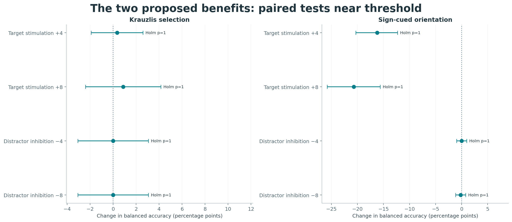
In a conventional self-attention matrix, an entry describes how strongly one query reads one key. Averaging a spatial-key column across queries gives its average incoming attention. Our observer has one CLS query and 100 spatial keys, so its attention array has one row. With one query, the column average equals that query's weight for each patch.
Symbols: A is an attention array, t indexes time, q a query, i a spatial key, and Q the number of queries. The bar denotes the average across queries. In this implementation Q is one, and alpha is exactly the spatial distribution used by the network. The 100 entries are reshaped into their 10 × 10 grid and enlarged to the input image coordinates. This projection displays the selection weight assigned to each grid site.
The galleries show an input image, its attention overlay, and a separate image-shaped attention panel at each timestep. Condition averages hold the named geometry, event, and intervention fixed. They summarize 48 scenes in each VDA group. An average can reveal stable spatial allocation but hide trial-specific differences; individual examples remain available for that reason. Color scales matter: normalizing every frame by its own maximum can make tiny residual weights look prominent. Use the gallery's common-scale maps and regional mass summaries for comparisons of absolute allocation.

The same cue-region inhibition −4 during change was also examined in a smaller exploratory sample with 100% validity and 18° changes. The following table includes all three sizes and both event locations under that specification. It uses 48 independent scene clusters with mirrored geometries treated as repeated observations. Its separate scene sample produces its own VDA4 estimate alongside the 384-scene primary test.
| Task | Event site | Hit difference (points) | BA difference (points) | BA 95% interval (points) |
|---|---|---|---|---|
| VDA4 | cued | -80.21 | -39.06 | -43.75 to -33.33 |
| VDA4 | uncued | +25.00 | +13.54 | +9.38 to +17.71 |
| VDA9 | cued | -75.00 | -37.50 | -41.67 to -32.81 |
| VDA9 | uncued | +12.50 | +6.25 | +3.65 to +9.38 |
| VDA16 | cued | -65.62 | -31.77 | -35.42 to -28.12 |
| VDA16 | uncued | +2.08 | +2.08 | +0.00 to +5.21 |
The uncued hit benefit decreases from 25.0 points in VDA4 to 12.5 in VDA9 and 2.1 in VDA16 in this exploratory comparison. The VDA16 uncued balanced-accuracy interval reaches zero, while cued costs remain large. In a larger array, released priority can spread among more competing items. This explanation can be tested by measuring how released priority is distributed among competing sites. Differences in cue positions, image resizing, item resolution, and baseline discrimination prevent attributing the pattern solely to the number of remembered objects or network capacity.
Timing also matters. For VDA4 in the same exploratory 100%-validity, 18° condition, cued-region inhibition −4 changed cued hit rate by −8.3 points during the cue, −7.3 during the blank delay, −2.1 during the sample, and −80.2 during the change. Uncued hit changes were +5.2, +6.3, +21.9, and +25.0 points respectively. These different profiles are consistent with multiple opportunities to influence later selection. The intervention affects reading and writing, with recurrent consequences that can persist after the manipulated phase.

Dose sweeps ask whether effects grow, saturate, or reverse as priority changes. The primary VDA4 sequence illustrates saturation: stronger cued inhibition further destroys cued detection, while the uncued benefit changes less between −4 and −8. This is expected if removal of a dominant competitor eventually stops being the limiting factor. Dose is expressed in the model's priority-logit units.
The full VDA analysis contains 131,616 inference presentations: 8,064 primary, 4,608 fresh native, 18,144 psychometric, and 100,800 exploratory intervention presentations. These presentation counts include repeated views of matched scenes; statistical analyses use scene-level pairing and clustering. The exploratory analyses vary dose, site, timing, array size, value, and validity. These exploratory plots develop hypotheses through pointwise comparisons; the confirmatory analysis is the prespecified eight-test family.
Independent checks verified identical paired pixels, unchanged preintervention attention, the first-change softmax transformation, unchanged choices under global-logit shifts, exported image pixels, unchanged learned tensors and checkpoint hashes, and normal analysis completion. Adding the same constant to every spatial logit must leave softmax unchanged; that control checks implementation specificity.
Explore dose and timing · Value strata · Verification receipt · Manuscript evidence ledger
A compact recurrent architecture with one shared spatial priority interface learned a broad supervised task battery. In its VDA continuation, a fixed-checkpoint intervention caused both improved detection away from a strongly cued location and impaired detection at that location. The result supports a computational account based on redistribution of evidence and memory access.
The architecture now learns moving-dot discrimination, cued motion change, motion-duration memory, and a broad set of appearance and working-memory tasks. The strongest connection to James Herman's recent analyses is the separation between constructing local comparison evidence and allowing that evidence to control a decision.
Scope. This chapter adds the completed 19-task search-suite test at selected checkpoint 55,100 to the earlier 13-task and 16-task results. It also replots completed frozen diagnostics. These are independent computational experiments by Jonathan Morgan, not an independent replication of James's checkpoints. Figures were regenerated from saved measurements and predictions, without model inference or training. Active continuation results are excluded.
The completed search-suite continuation trained to 57,000 cumulative suite updates. Validation selected checkpoint 55,100 before a full test with 111,872 presentations across 437 conditions and 19 tasks. All tasks use one shared sensory, attention and recurrent backbone; task identity selects the terminal output head. Condition means contribute equally within each task. Empty-list recognition conditions assess specificity and are excluded from balanced accuracy and AUC.
Mean test balanced accuracy is 100% for motion direction, 98.54% for cued motion-duration memory, 94.45% for native cued motion change, and 81.15% for motion-memory search. The last task requires remembering a motion direction and selecting a matching direction from a later four-location array with independently rendered dots. Signed cued orientation reaches 99.22%, spatial binding 99.90%, and image-list recognition 90.49% on their tested condition sets.
The expanded suite is not uniformly solved. Object-memory search reaches 33.02% and pop-out search 42.63% balanced accuracy, against 25% chance, while the native VDA averages are approximately 71–72%. These conditions prevent describing the model as generally successful at every visual task. “More robust” here refers to broader and more reliable task learning in the documented runs, not demonstrated robustness across training seeds, adversarial perturbations, arbitrary stimuli, or every optimization interruption.
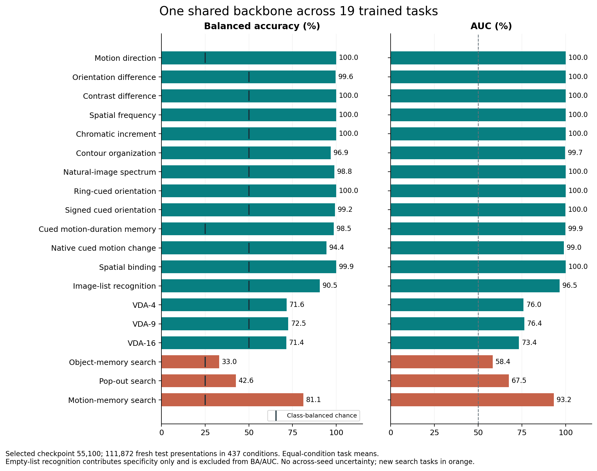
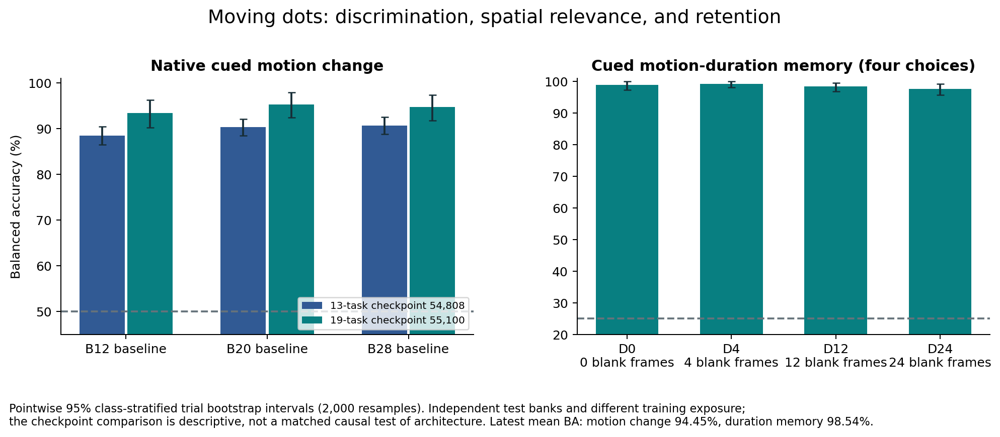
A normalized, fixed local correspondence bank compares 24-by-24 image neighbourhoods at causal lags 1, 2 and 4, over 81 displacement candidates. Learned refinement and temperatures convert these correlations into local displacement populations. Expected velocity supports image transport and a pixel-prediction error. An RGB appearance route runs alongside this motion representation. No simulator direction, event boundary, cue-side label or optical-flow supervision is supplied to the model.
The explicit comparison branch contrasts a recent four-frame population with an earlier eight-frame population, leaving four intervening frames, at every location and time. It preserves reference, observation, their absolute difference and distance summaries in 735 channels. One spatial attention map selects these comparisons, appearance/motion values, and spatial-memory writes. The selected comparisons remain in a temporal trace alongside the recurrent CLS representation, rather than being compressed into CLS alone.
This architecture includes an engineered correspondence and temporal-comparison inductive bias. The fixed operator and windows are part of the model specification. The results do not show that an otherwise unchanged generic raw-pixel transformer learned these operators unaided. Stabilization also combined bounded normalized attention scores, normalized recurrent gates, bounded attention-dependent writes and gradient clipping. Its success does not identify one uniquely causal modification.
Earlier frozen diagnostics found cue information recoverable from memory and local motion-change balanced accuracy of 81.4%, but only 52.9% from a linear readout of final CLS. A cue-plus-local-motion diagnostic reached 82.9%, using privileged timing and local labels. Those measurements localized an availability-to-use problem; they were not end-to-end performance claims or proof of a particular encoding lesion.
During the explicit-comparison model's earlier instability, a good checkpoint reached 74.91% validation balanced accuracy and a later collapsed checkpoint reached 50%. With weights frozen, replacing the collapsed checkpoint's entire attention trajectory with donor maps from the good checkpoint on the same pixels restored balanced accuracy to 75.73%. The reciprocal substitution reduced the good model to 50%. Thus useful processing survived in the collapsed weights, while the attention-controlled trajectory was sufficient to account for this diagnostic performance difference.
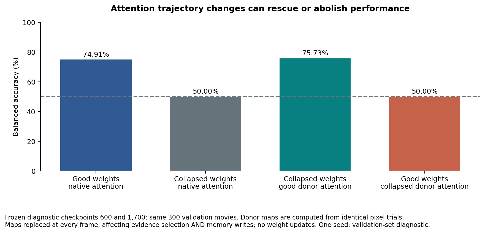
James's change-mechanism report identifies a local recurrent comparator in crossattn1 and, in many original-model pilots, a multiplicative input-memory comparator in attention values. His curriculum report shows that early training changes which solution the original model learns. His October 8 synthesis shows that foil evidence can remain encoded but weakly transmitted until attention broadcasts it.
Our comparison is computed explicitly before spatial pooling. It is not the same multiplicative comparator, but its access to the decision is attention-dependent. This suggests a useful refinement of the route account: the location of a comparator alone does not determine attention dependence. A comparator outside attention can still require attention to deliver its evidence; conversely, a local recurrent comparator with an effective alternative readout can survive an attention clamp.
Our native motion experiments also found spatially selective impairments. In the single-task checkpoint, strong foil stimulation reduced target hits while increasing foil reports without a comparable catch-FA increase. The later 13-task checkpoint showed strong costs in both motion and static selection, but none of its eight planned balanced-accuracy benefit tests established a gain after Holm correction. The report retains those null benefit findings.
At frozen VDA checkpoint 16,000, subtracting 4 from the cued bottom-right priority logits during the final two frames raised opposite-location detection from 48.18% to 67.97%, a paired gain of 19.79 percentage points (95% interval 15.62–24.22). Cued detection fell from 86.98% to 6.51%, and catch false alarms decreased from 3.65% to 1.82%. Each event/arm contains 384 matched scenes. The eight prespecified directional hit-rate tests passed Holm correction; these are different endpoints from the earlier suite's balanced-accuracy tests.
Pathway boundary. The explicit long-window comparison branch is identically zero in these seven-frame trials: the earlier reference has zero confidence. Appearance, short-lag motion features and recurrent processing remain active. The VDA effect therefore cannot be attributed to the 735-channel long-window comparison branch. It supports shared spatial selection acting on evidence available through other pathways. The opposite-location change deliberately violates the displayed 100%-valid cue, so it is a counterfactual cue-event experiment, not native calibrated cue-validity behaviour.
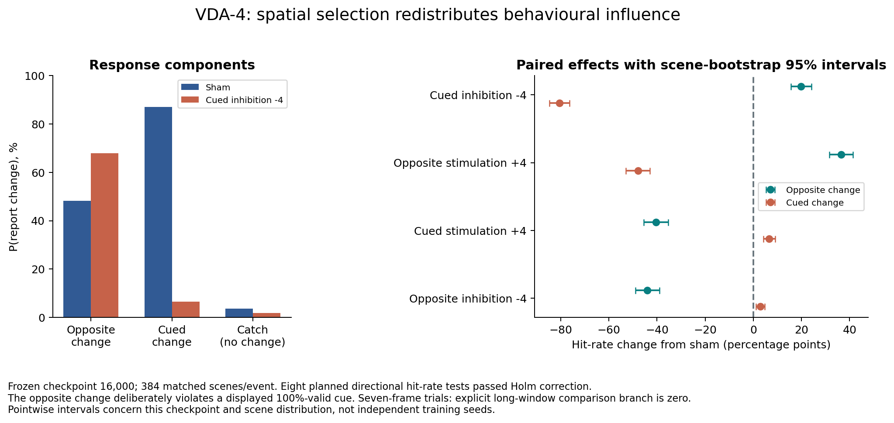
The completed evidence establishes broad joint learnability in this implementation, causal dependence on the shared attention-controlled trajectory in the tested frozen experiments, and a spatial VDA trade-off without the explicit long-window branch. The comparison route has not yet been isolated by a matched acute ablation, the roles of normalization versus comparison construction have not been separated, and the results do not independently replicate James's architecture, reinforcement-learning protocol, reward ratios or physiological SC manipulations.
The most direct connecting experiment would cross selective removal of the explicit comparison contribution with a controlled attention perturbation on identical frozen motion trials, retaining the appearance/recurrent branch. A complementary test would vary VDA baseline and test durations so that the long-window branch can contribute, while preserving the seven-frame condition. These are prospective tests, not completed results.
Source hashes and figure evidence ledger · Original 13-task attention movies · Native stimulus animations and human judgment controls.
The numbered references link to research papers, primary preprints, or their publisher records. The source ledger distinguishes full-text inspection, abstract inspection, and bibliographic metadata verification. Metadata verification establishes the citation's identity. The task atlas retains its own detailed support-and-adaptation ledger, including which features of the implemented assays differ from their motivating experiments.
A suggested route: begin with Morgan, Albanna, and Herman for the recurrent-attention hypothesis; follow the causal collicular and frontal-eye-field experiments for the selection question; use the optical-flow tutorial to understand the local motion representation; then read the normalization, gated recurrence, and working-memory sources alongside the implemented equations. The biological sources motivate computations at several levels, from local sensory responses to recurrent selection and behavior.
Model source hashes, task provenance, reference metadata, and build checks accompany this local manuscript. The explainer is an offline reading and visualization interface. Measured results are linked to their saved analysis records; interactive architecture figures remain teaching demonstrations.
76 distinct scholarly references cited in the manuscript. Search by author, title, or year.
Publisher-deposited Crossref metadata matched by exact DOI; title and authors checked
Europe PMC bibliographic record and available abstract retrieved; not full text
Crossref publisher-deposited metadata; abstract available
Crossref publisher-deposited metadata; no abstract in this record
Europe PMC bibliographic record and available abstract retrieved; not full text
Crossref publisher-deposited metadata; abstract available
Europe PMC bibliographic record and available abstract retrieved; not full text
Europe PMC bibliographic record and available abstract retrieved; not full text
Europe PMC bibliographic record and available abstract retrieved; not full text
Europe PMC bibliographic record and available abstract retrieved; not full text
Europe PMC bibliographic record and available abstract retrieved; not full text
Europe PMC bibliographic record and available abstract retrieved; not full text
Europe PMC bibliographic record and available abstract retrieved; not full text
Europe PMC bibliographic record and available abstract retrieved; not full text
Europe PMC bibliographic record and available abstract retrieved; not full text
Europe PMC bibliographic record and available abstract retrieved; not full text
Europe PMC bibliographic record and available abstract retrieved; not full text
Primary full-text preprint v1 inspected; local research/morgan2025.html
Primary article abstract and bibliographic record inspected through Europe PMC, PMID1374953
Europe PMC bibliographic record and available abstract retrieved; not full text
Europe PMC bibliographic record and available abstract retrieved; not full text
Europe PMC bibliographic record and available abstract retrieved; not full text
Europe PMC bibliographic record and available abstract retrieved; not full text
Abstract-only verified on publisher page and Europe PMC MED record 9384378. Nature page provides access/purchase options rather than full article text.
Europe PMC bibliographic record and available abstract retrieved; not full text
Europe PMC bibliographic record and available abstract retrieved; not full text
Europe PMC bibliographic record and available abstract retrieved; not full text
Europe PMC bibliographic record and available abstract retrieved; not full text
Europe PMC bibliographic record and available abstract retrieved; not full text
Europe PMC bibliographic record and available abstract retrieved; not full text
Europe PMC bibliographic record and available abstract retrieved; not full text
Full text retrieved directly from PMC; online Methods and task descriptions read. Issue year 2010; online publication December 2009.
Full text retrieved directly from PMC; Materials and Methods (Stimuli; Procedure) read.
Author-hosted scanned full-text PDF retrieved; all pages OCR-transcribed locally with Apple Vision CPU-only request; introduction and Methods read. OCR may contain typography errors, so only clear prose is quoted.
Publisher redirected to a bot-verification page, not article text. Crossref verified bibliographic title/authors/DOI/year. Europe PMC queries returned HTTP 503. No abstract or full-text methods/results verified.
Author-hosted scanned full-text PDF retrieved and OCR-transcribed locally using Apple Vision CPU-only request; Methods and Procedure read. OCR typography is imperfect.
Scanned full-text PDF retrieved from a scholarly mirror and OCR-transcribed locally with Apple Vision CPU-only request; abstract, Methods and stimulus construction read. This is a mirror, not the publisher page.
Abstract-only scientific verification via Europe PMC core record PMID 8303837. Elsevier API returned metadata only and marks article non-open-access; full methods/results not retrieved. Crossref corroborated bibliography.
Full primary article retrieved directly from PLOS via urllib; Methods and Figure 1 text read. Firecrawl extraction failed at the service layer; this is not an article-access limitation.
Full author manuscript retrieved from PMC and independently from Europe PMC XML; task description and Figure 1 inspected.
Full primary article retrieved from PMC; abstract, Direction discrimination task methods and Figure 2 read.
Full primary article retrieved from PMC; Results and Materials and Methods inspected, especially Repeat-Detection Task and Forced-Choice Tests.
Europe PMC bibliographic record and available abstract retrieved; not full text
Abstract-only verified through Europe PMC MED record 14709235 (core API). Publisher full-text attempt returned HTTP 403; Europe PMC identifies subscription-required full text. PubMed HTML returned a cookie interstitial, not evidence. No detailed methods or numerical results are attributed.
Europe PMC bibliographic record and available abstract retrieved; not full text
Author-hosted primary paper; metadata and abstract checked
Crossref publisher-deposited metadata; no abstract in this record
Original paper reproduced by University of Washington; method and metadata inspected
University-hosted primary paper; bibliographic identity checked
Author-laboratory primary publication record and abstract inspected
Primary paper; bibliographic identity checked against author publication list
Primary paper in institutional repository; title, author and method checked
Official CVPR proceedings metadata and primary preprint abstract checked
Primary preprint abstract inspected; CVPR2018 version, first posted2017
Primary preprint abstract and metadata retrieved
Max Planck primary institutional bibliographic record checked
Primary paper and publisher bibliographic record inspected
Europe PMC bibliographic record and available abstract retrieved; not full text
Primary preprint abstract and metadata retrieved
Europe PMC bibliographic record and available abstract retrieved; not full text
Primary preprint abstract and metadata retrieved
Primary preprint abstract and metadata retrieved
Europe PMC bibliographic record and available abstract retrieved; not full text
Europe PMC bibliographic record and available abstract retrieved; not full text
Europe PMC bibliographic record and available abstract retrieved; not full text
Primary preprint abstract and metadata retrieved
Primary preprint abstract and metadata retrieved
Primary preprint abstract and metadata retrieved
Primary preprint abstract and metadata retrieved
Europe PMC bibliographic record and available abstract retrieved; not full text
Europe PMC bibliographic record and available abstract retrieved; not full text
Europe PMC bibliographic record and available abstract retrieved; not full text
Publisher-deposited Crossref metadata matched by exact DOI; title and authors checked
Europe PMC bibliographic record and available abstract retrieved; not full text
Primary preprint abstract and metadata retrieved
Primary preprint abstract and metadata retrieved
No references match that search.